Automatización de Telar IndustrialControl de Inserción de Trama para un Vamatex C 201
Documentación técnica, operativa y económica del proyecto. Sistema de hardware y software que reemplaza la cinta de papel perforada de un telar de 1989 por una aplicación web, permitiendo diseñar, guardar y ejecutar los dibujos del tejido sin modificar la mecánica de la máquina ni impedir que se siga operando manualmente.
1Control de Cambios
| Versión | Fecha | Responsable | Detalle del cambio |
|---|---|---|---|
| 1.0 | 16 de mayo de 2026 | Equipo de Proyecto (7mo Informática, Instituto Leonardo Murialdo) | Primera versión de la documentación técnica y funcional construida a partir del relevamiento in situ inicial y la bitácora de avances de hardware y software. |
| 2.0 | 30 de julio de 2026 | Equipo de Proyecto (7mo Informática, Instituto Leonardo Murialdo) | Actualización integral realizada a partir de la Revisión 3 del stack técnico (paquete “control_insercion_trama_completo”) y de la carpeta de documentación interna del equipo. Los cambios más relevantes: (1) se reemplaza el esquema de base de datos ficticio por el esquema real en PostgreSQL alojado en Neon (tablas patrones, telares, historial_produccion, errores_log, usuarios y las tablas de autenticación biométrica); (2) se actualiza el Nivel 2 de hardware al camino único con las bobinas de selección; (3) se corrige la Guía de Estilos con el Design System real (paleta azul y tipografía IBM Plex Sans, Questrial e IBM Plex Mono); (4) se documenta el login biométrico WebAuthn ya implementado; (5) se actualiza el cronograma (Gantt real de 8 etapas) y la estimación económica con la lista de componentes de la Revisión 3 y el costeo de horas de personal; y (6) se agrega la Sección 9, “Documentación de Avances”, con el registro de entrevistas, las minutas de reunión, el registro de cambios del mockup y la bitácora de avances técnicos. |
| 3.0 | 4 de agosto de 2026 | Equipo de Proyecto (7mo Informática, Instituto Leonardo Murialdo) | Reorganización estructural del documento: (1) se crea la Sección 5 “Hardware”, consolidando ahí todas las especificaciones técnicas de hardware antes dispersas en Restricciones e Interfaces (incluye una nueva tabla de componentes por bloque); (2) se crea la Sección 9 “Lineamientos Futuros” con posibles líneas de crecimiento del proyecto; (3) se agrega el Product Backlog (épicas y sprint backlog) dentro de la Oferta de Gestión; (4) en la Oferta Económica se fusiona “Proveedores de insumos varios” dentro de “Proveedores de insumos electrónicos”; (5) se actualizan los montos de la tabla de presupuesto con las cifras exactas de la Lista de Componentes; (6) se reescribe la responsabilidad del Equipo de Desarrollo en el Contrato con un enfoque de proyecto integral, no solo electrónico; (7) se reemplaza “planta” por “fábrica” en todo el documento; y (8) el diagnóstico del problema (árbol de causas y soluciones) y la documentación de avances (entrevistas, minutas, bitácora técnica) se externalizan a un documento aparte: la Bitácora de Proyecto. |
| 4.0 | 1 de septiembre de 2026 | Equipo de Proyecto (7mo Informática, Instituto Leonardo Murialdo) | Revisión integral conforme al manual de buenas prácticas de la UTN: se incorpora el índice; se convierten en tabla las definiciones (2.4), las características de los usuarios (3.3), los requerimientos funcionales (4.1) y no funcionales (4.2); se agregan las secciones 4.6 Interfaces de hardware (RHW) y 4.7 Limitaciones del alcance (LIM); se suma el modelo entidad-relación de la base de datos (3.2.3) y el respaldo y recuperación de datos (3.4.8); se actualiza la lista de componentes (5.6) y la estimación económica (8) con los valores vigentes; se completa el punto 7.1 Proveedores de Internet; se unifica el cronograma en 8 etapas; se resuelve la contradicción sobre el armado en protoboard, quedando la entrega sobre placa universal soldada; y se eliminan los restos de funciones de monitoreo que no forman parte del alcance (alarma por rotura de hilo y parada de emergencia por software). |
Tabla 1. Control de cambios del documento.
2Introducción
2.1. Propósito
El objetivo primordial de este proyecto es modernizar digitalmente un telar Vamatex C201 que se ubica en una fábrica textil en Billinghurst, Buenos Aires mediante el desarrollo e implementación de un sistema de control electrónico y un editor web interactivo para telares industriales planos mecánicos que carecen de PLC. El sistema busca digitalizar la creación y gestión de matrices de tejido a través de una matriz visual, reemplazando la dependencia de configuraciones puramente mecánicas y laboriosas. Esto permite agilizar drásticamente los tiempos de cambio de producción, mantener un archivo de diseños guardados y otorgar control directo de ejecución sobre la maquinaria (iniciar, pausar y retroceder para corregir errores físicos en tiempo real), optimizando así la productividad general y reduciendo el margen de error operativo.
2.2. Alcance
El sistema contempla el diseño, desarrollo e implementación de una solución de automatización y supervisión industrial para telares, estructurada en dos niveles de madurez tecnológica:
Nivel 1 (MVP, Control de Marcha/Pausa y Supervisión Externa): Constituye el alcance actual del proyecto. Consiste en una intervención no invasiva sobre la electrónica de control del telar, operando exclusivamente sobre los botones de Marcha, Pausa y Retroceder mediante relés optoacoplados conectados en paralelo a la botonera física existente. La sincronización y el conteo de pasadas se ejecutan a través de un sensor inductivo/óptico montado sobre la estructura mecánica. El catálogo de dibujos, el estado del telar y la producción se guardan en una base de datos en la nube, a la que acceden la web y el nodo de control a través del backend.
Nivel 2 (Evolución por Marcos, intervención de las bobinas de selección): Etapa en desarrollo orientada al control directo de la calada y selección de tramas. Tras la inspección real del telar (Vamatex C201, matrícula 1104, revisado en 1989 según su placa de datos) se confirmó que la máquina ya trabaja por grupos de marcos mediante una cinta de papel perforada angosta que acciona palancas de selección (no hilo por hilo), con un máximo confirmado de 8 matrices simultáneas, por lo que esta etapa reemplaza esa función. Se descartaron los actuadores rotativos evaluados inicialmente porque no soportan la carga cíclica, la vibración ni la pelusa del telar real, y no aprovechaban las bobinas que la máquina ya tiene; se optó por ir directo al retrofit definitivo con la intervención de las 4 bobinas de selección que el telar ya tiene instaladas y en funcionamiento. Trabajan con 24 V en corriente alterna, dato confirmado con el dueño de la fábrica el 03/09/26, y hoy reciben su señal desde el lector óptico de la cinta a través de unas plaquetas alojadas en la caja del telar. El punto de intervención es el propio lector óptico, no la bobina: según explicó el dueño de la fábrica, cada lector se corta con una llave, de modo que en lugar de que el papel interrumpa el haz lo haga un interruptor electrónico que entrega un 1 o un 0. El sistema conmuta entonces la señal del lector mediante relés OptoMOS LCA110 conectados directamente a los GPIO del ESP32, uno por lector, con lo que las plaquetas del telar quedan intactas y la corriente a manejar es mucho menor. La elección del componente no es indiferente: un relé mecánico no soportaría el régimen de trabajo. Los telares de rapier de esta generación trabajan 300 pasadas por minuto, dato confirmado con el dueño de la fábrica el 06/09/26, lo que da 5 conmutaciones por segundo y unas 180.000 en una jornada de 10 horas, frente a las 100.000 de vida útil de un relé común. Tampoco sirve un optoacoplador de fototransistor como el PC817, que conduce en un solo sentido y con corriente alterna dejaría pasar medio ciclo. El primer paso obligatorio de esta etapa es medir gratuitamente en el telar la fuerza, el recorrido y el tiempo por pasada (ver Guía de mediciones y verificaciones) para confirmar la señal de cada lector óptico antes de conectar los relés.
2.3. Personal Involucrado
- Equipo Desarrollador: Alumnos de 7mo Informática (Ciclo 2026) del Instituto Leonardo Murialdo. Nombres y roles específicos:
- Manfredo, Juan Ignacio: Project Manager - Desarrollador Backend
- Lede Buschiazzo, Lautaro: Encargado 01 de Infra. de MCU - Administrador de BD
- Ferrando, Jaco: Encargado 02 de Infra. de MCU - Diseñador UX/UI
- Iannone, Mia: Desarrollador 02 - Front End
- Montenegro, Franco: Encargado de Infra. de Red
- Equipo de Partners: Alumnos de 7mo año (Ciclo 2026) de otras modalidades del Instituto Leonardo Murialdo, encargados de apoyar al Equipo Desarrollador. Nombres y modalidad específica:
- Zamora, Nahuel: 7mo Electrónica
- Muriel, Funes: 7mo Multimedios
- Docente / Supervisora: Prof. Pedaci, Lourdes (Cátedra de Evaluación de Proyectos).
- Cliente / Entrevistado: Encargado y personal de mantenimiento de la Fábrica Textil Industrial: Norberto Ferrando.
2.4. Definición, acrónimos y abreviaturas Buenas Prácticas UTN p.56
| Término | Significado | Descripción en el contexto del proyecto |
|---|---|---|
| API | Application Programming Interface | Reglas por las que la web y el ESP32 le piden datos al backend. Ninguno accede a la base de datos directamente. |
| BOM | Bill of Materials | Lista de materiales de fabricación, con cantidad y función de cada componente. |
| CRUD | Create, Read, Update, Delete | Las cuatro operaciones sobre los dibujos guardados: crear, consultar, modificar y borrar. |
| Dobby | - | Mecanismo del telar que decide qué marcos suben en cada pasada. Es lo que interviene el sistema en el Nivel 2. |
| EMI | Electromagnetic Interference | Interferencia electromagnética: ruido eléctrico de los motores que puede afectar las señales de control. |
| ESP32 | - | Microcontrolador con WiFi que actúa de puente entre la página web y la botonera del telar. |
| GPIO | General Purpose Input/Output | Pin del microcontrolador configurable como entrada o salida. |
| IP65 | - | Grado de protección del gabinete: estanco al polvo y a chorros de agua. Necesario por la pelusa textil. |
| JSONB | JavaScript Object Notation Binary | Formato en que PostgreSQL almacena las matrices del dibujo, permitiendo consultarlas sin convertirlas. |
| Ligamento | - | Patrón de cruce entre los hilos de urdimbre y trama que forma el dibujo de la tela. |
| MVP | Minimum Viable Product | Producto mínimo viable: la versión más chica que ya resuelve el problema del cliente. |
| Pasada | - | Cada inserción de un hilo de trama a lo ancho del telar. Cada fila del dibujo se teje en una o más pasadas seguidas (sus repeticiones). |
| PCB | Printed Circuit Board | Placa de circuito impreso. |
| PLC | Programmable Logic Controller | Controlador lógico programable. Alternativa industrial descartada por costo. |
| RF / RNF | - | Requerimiento funcional / requerimiento no funcional. |
| WDT | Watchdog Timer | Temporizador que reinicia el microcontrolador si el programa queda colgado. |
Tabla 2. Definiciones, acrónimos y abreviaturas utilizados en el documento.
2.5. Referencias
Guías didácticas y lineamientos de organización de la carpeta provistos por la Prof. Lourdes Pedaci, "Evaluación de Proyectos" (2025/2026).
Universidad Tecnológica Nacional, Facultad Regional Tucumán. (2012). Buenas prácticas en proyectos informáticos. edUTecNe. http://www.edutecne.utn.edu.ar (Estructuras de tablas e indicadores: pp. 56-62).
IXYS Integrated Circuits Division. (2012). LCA110: Single-pole, normally open OptoMOS relay (DS-LCA110-R12) [Hoja de datos]. Littelfuse. https://www.littelfuse.com
Omron Corporation. (2020). Solid state relays: technical guide [Hoja de datos]. Omron Electronic Components. (Corriente mínima de carga en salidas con triac).
Espressif Systems. (2023). ESP32 series datasheet (versión 4.3). Espressif Systems (Shanghai) Co., Ltd. https://www.espressif.com
World Wide Web Consortium. (2021). Web Authentication: An API for accessing public key credentials, Level 2. W3C Recommendation. https://www.w3.org/TR/webauthn-2/
Vamatex S.p.A. (1989). Telaio C 201: manuale di uso e manutenzione. Vamatex, Bérgamo, Italia. (Documentación original de la máquina, matrícula 1104).
Poder Legislativo de la Nación Argentina. (1972). Ley N.º 19.587 de Higiene y Seguridad en el Trabajo y su Decreto Reglamentario 351/79. Boletín Oficial de la República Argentina. (Anexo V: niveles de ruido en ambientes laborales).
2.6. Resumen Ejecutivo
La industria textil de pequeña y mediana escala, con maquinaria de accionamiento mecánico enfrenta serias limitaciones operativas debido a la dependencia de procesos manuales en la configuración de ligamentos. La falta de automatización mecatrónica e integración digital incrementa la tasa de error humano en el levantamiento de lizos, lo que genera desperdicio ineficiente de materia prima y tiempos muertos considerables en la línea de producción. Este proyecto aborda dicha problemática mediante el desarrollo de una solución integral IoT que digitaliza el diseño de matrices y permite comandar el arranque y la parada del telar de forma remota. Gracias a la combinación de una interfaz web intuitiva, un backend robusto y base de datos PostgreSQL alojada en la nube (Neon), se garantiza una producción textil continua, precisa y resiliente frente a interrupciones eléctricas o caídas de conectividad de red.
3Descripción General
3.1. Perspectiva del producto
El sistema se define como un desarrollo de retrofit tecnológico. No sustituye a las máquinas existentes ni añade actuadores de control directo sobre el motor principal, sino que actúa como una capa externa y autónoma de supervisión digital que coexiste con la infraestructura eléctrica y mecánica actual de la fábrica. El diagnóstico completo del problema (árbol de causas, efectos y soluciones integradas) se documenta por separado en la Bitácora de Proyecto, que el equipo mantiene actualizada junto con el registro de entrevistas, minutas y avances técnicos del período.
La máquina intervenida
El relevamiento presencial del 19/08/2026 permitió confirmar el modelo, la tensión de la botonera y el mecanismo de selección. Las fotografías siguientes documentan el estado del telar antes de la intervención.
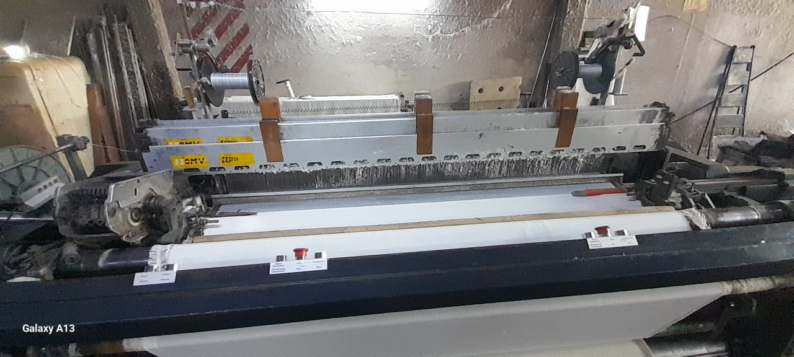
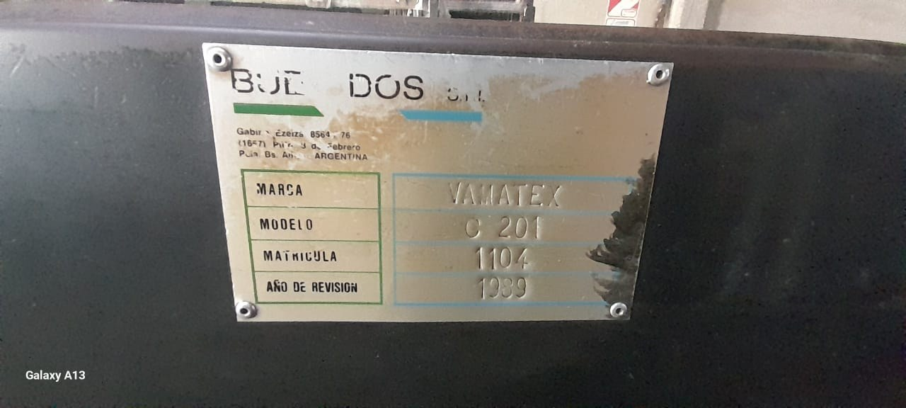
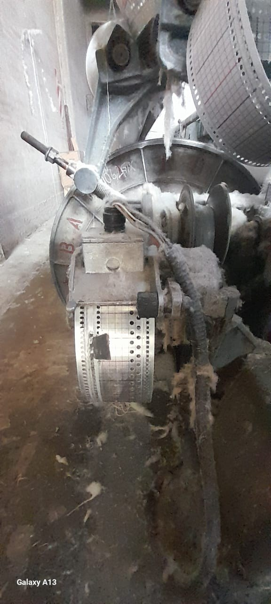
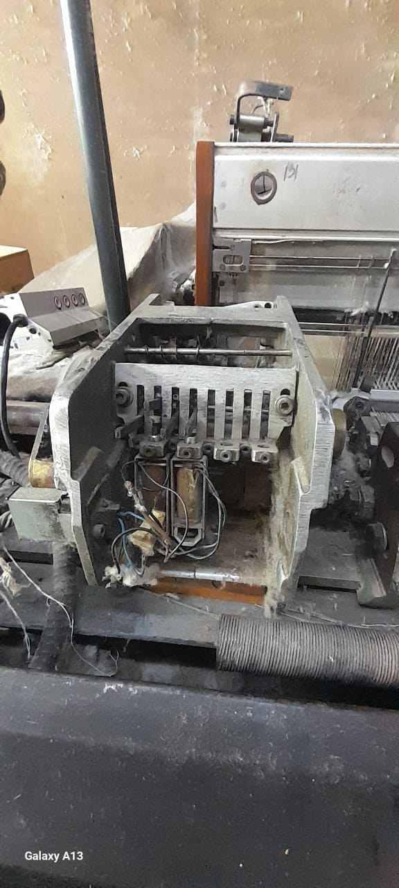
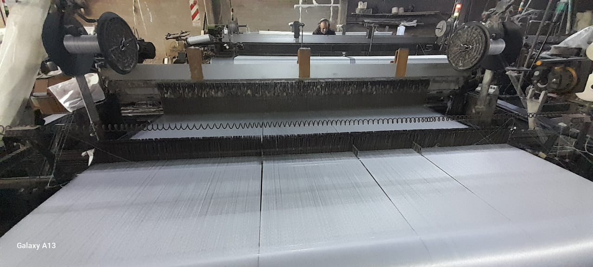
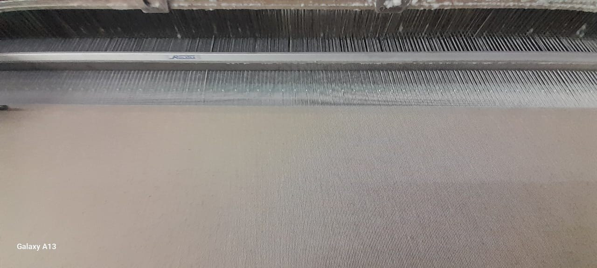
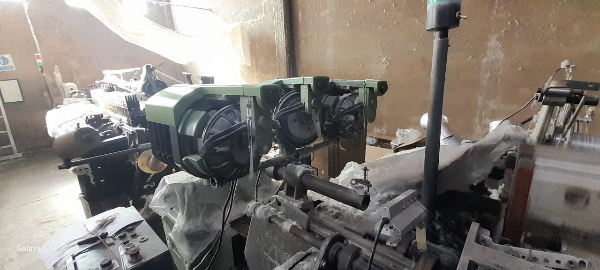
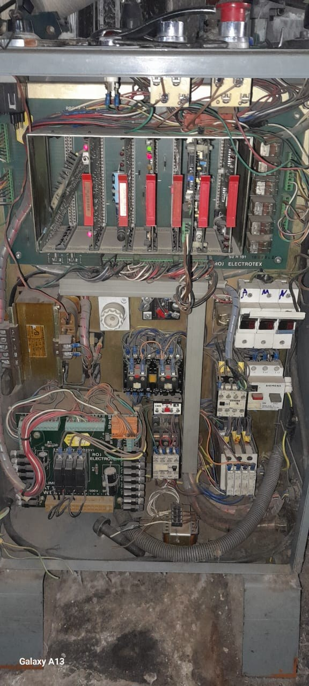
3.2. Funcionalidad del producto y sistemas de diseño (ui/ux)
La plataforma se organiza en tres vistas principales (Inicio, Editor y Biblioteca), diseñadas bajo un enfoque mobile-first: el operario abre la web desde el navegador de su celular. En celular y en computadora se usa la misma columna de hasta 430 px, con una barra de navegación inferior (Bottom Navigation Bar) con iconos y etiquetas, siguiendo los lineamientos del Design System del proyecto para garantizar alta legibilidad en entornos industriales.
- Inicio: pantalla de entrada. Muestra quién inició sesión (o el aviso de modo invitado), el dibujo que está en edición y los accesos al Editor y a la Biblioteca. Desde ahí se consulta el código de recuperación, se invita a otra persona a registrarse y se activa el modo oscuro.
- Editor de Dibujo: grilla interactiva donde cada fila lleva una sola bobina (una trama por pasada), que se teje en una o más pasadas seguidas, y cada columna es una bobina de selección: tocar una celda la activa o la desactiva para esa pasada. Al costado de cada fila se indica cuántas pasadas seguidas se teje. Arriba se definen las filas (1 a 300) y las columnas (1 a 8), el nombre del dibujo con su indicador de estado, y una barra con el estado del equipo del telar (conexión, tejido y conteo del sensor). Incluye las herramientas Limpiar, Intercalar (agrupa filas seguidas, cada una con su bobina, para que se alternen pasada por pasada: por ejemplo las filas de las bobinas 1, 3, 4 y 2 durante 120 pasadas), el simulador de color de hilo, la ficha del dibujo (metros por pasada e hilado) y la descarga de la ficha técnica en PDF; los controles ▶, Pausa, Retroceder y Terminar trabajo (⏹), que resaltan la fila que se está tejiendo; y los botones Nuevo y Guardar.
- Biblioteca de Dibujos: pantalla con el listado de los dibujos guardados, un buscador por nombre y, para cada dibujo, las acciones Cargar (lo abre en el editor), Estadísticas (veces tejido, pasadas, metros y horas de máquina) y Eliminar. Cada cambio se guarda en la base PostgreSQL a través del backend, sin recargar la página.
3.2.1. Guía de Estilos y Especificación Visual (Design System)
- Paleta Cromática: Modo claro con fondo blanco azulado (#F6F8FA) y modo oscuro con azul profundo (#131A24), para reducir la fatiga visual en jornadas largas. Color de marca e interacción: azul navy (#1E3A5F) para botones de acción principal (“Aplicar”, “Guardar”, “Nuevo”) e iconos activos, con degradado de azul (de #1E3A5F a #7FA8C9, pasando por #3D6B96) en la cabecera. Texto principal en gris azulado oscuro (#1F2937), texto secundario en gris medio (#5F6976) y texto claro (#F0F4F8) sobre los botones y en el modo oscuro. La relación de contraste entre el azul navy primario y el fondo claro es de 10,80:1, superando el nivel AAA de las pautas WCAG (mínimo 7:1 para texto normal).
- Tipografía y Legibilidad: IBM Plex Sans para el texto, Questrial para los títulos e IBM Plex Mono para etiquetas y datos numéricos, las tres cargadas desde Google Fonts; sin conexión, cada una cae a la fuente del sistema del dispositivo. El diseño es para celular primero: la aplicación ocupa una sola columna de hasta 430 px de ancho, centrada, tanto en el teléfono como en una computadora, con botones y celdas pensados para tocarse con el dedo.
3.2.2. Arquitectura Backend y Modelo de Datos (PostgreSQL)
El backend, desarrollado en Node.js con Express, gestiona la lógica de negocio (transacciones, validaciones) y expone una API REST que es el único punto de acceso a la base de datos: tanto la web como el firmware del ESP32 hablan con este mismo backend por la misma API, y ninguno de los dos toca la base de datos de forma directa. La persistencia de datos se maneja en PostgreSQL, alojado en la nube sobre Neon, mediante el siguiente esquema relacional:
| TABLA | CLAVE PRIMARIA | CAMPOS PRINCIPALES | PROPÓSITO |
|---|---|---|---|
| patrones | id | nombre, filas (1 a 300), columnas (1 a 8), matriz_pasadas (JSONB), matriz_ligamento (JSONB), repeticiones_por_fila, colores_filas (JSONB), metadata (JSONB), metros_por_pasada, grupos_intercalados, hilado_peso_kg, hilado_metros_max, hilado_pasadas_base, creado_por_invitado | Biblioteca de matrices de tejido, independiente de los telares. |
| telares | id | codigo, nombre, estado (apagado/tejiendo/pausado/error), motivo_pausa, patron_actual_id, elementos_seleccion, y las señales del ESP32 (último sondeo, órdenes de Retroceder, retrocesos contados, uso manual de la botonera, posición incierta) | Estado en tiempo real de cada máquina y qué patrón tiene asignado. |
| historial_producción | id | telar_id, patron_id, fecha_inicio, fecha_fin, fila_actual, repeticion_en_fila, vueltas_completadas, pasadas_totales (estimadas por reloj), pasadas_sensor (medidas), conteo_validado, estado | Trazabilidad de cada producción: posición exacta para poder retroceder, sin necesidad de reconstruir nada. |
| errores_log | id | telar_id, titulo, mensaje, codigo, creado_at | Registro de errores del sistema (reemplaza el log local que antes vivía en el navegador). |
Tabla 3. Entidades de la base de datos y su propósito.
3.2.3. Esquema de Base de Datos y Estructura JSONB
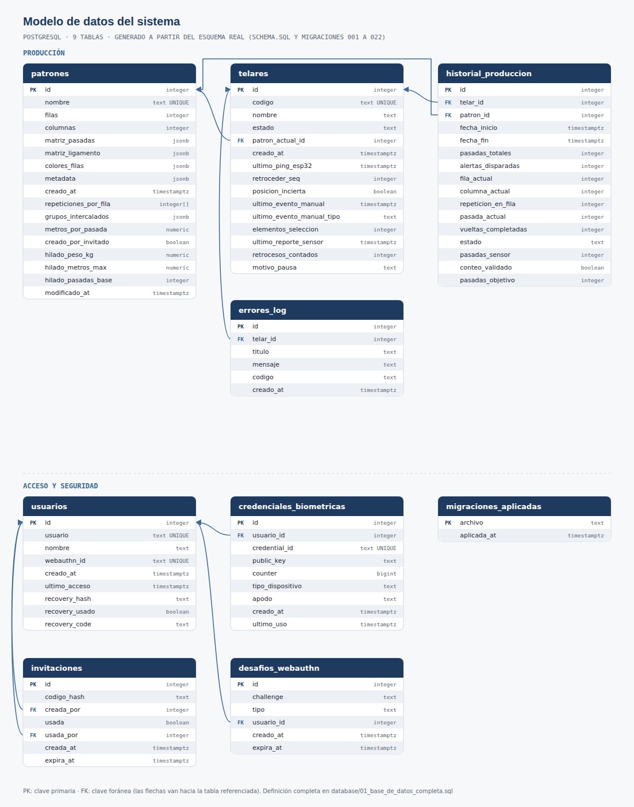
El modelo de datos se organiza en nueve tablas: cuatro para el funcionamiento del telar (patrones, telares, historial de producción y registro de errores), cuatro para el ingreso de usuarios (usuarios, credenciales biométricas, desafíos de WebAuthn e invitaciones) y una que registra qué migraciones se aplicaron. Los patrones guardan el dibujo en dos campos JSONB -la matriz de pasadas y la de ligamento-, lo que permite consultarlos desde PostgreSQL sin convertirlos previamente. Los telares registran su estado y el patrón asignado, y el historial de producción lleva la posición exacta del tejido en curso, con la restricción de que solo puede existir una producción abierta por telar. El diagrama siguiente resume las entidades y sus relaciones.
El almacenamiento persistente utiliza PostgreSQL (alojado en Neon) aprovechando sus capacidades relacionales y el tipo de dato nativo JSONB para las matrices de patrones. A continuación, el esquema actual, resumido (la definición completa, con todas las restricciones, está en database/01_base_de_datos_completa.sql):
CREATE TABLE patrones (
id SERIAL PRIMARY KEY,
nombre TEXT NOT NULL UNIQUE,
filas INTEGER NOT NULL CHECK (filas BETWEEN 1 AND 300),
columnas INTEGER NOT NULL CHECK (columnas BETWEEN 1 AND 8), -- una por bobina
matriz_pasadas JSONB NOT NULL, -- una fila por pasada; celda 1 = la bobina se activa (una por fila)
matriz_ligamento JSONB, -- binario (0/1), derivado automáticamente
repeticiones_por_fila INTEGER[], -- pasadas seguidas de cada fila (1 a 9999)
grupos_intercalados JSONB, -- filas intercaladas: [{desde, hasta, pasadas}]
colores_filas JSONB, -- color de hilo por fila (#RRGGBB)
metadata JSONB, -- ej: {"tipo": "Tafetán"}
metros_por_pasada NUMERIC(10,6), -- lo carga el operario; para pasar pasadas a metros
hilado_peso_kg NUMERIC(10,3), -- peso del hilado disponible (kg)
hilado_metros_max NUMERIC(12,2), -- metros de tela que alcanza a tejer
hilado_pasadas_base INTEGER, -- pasadas acumuladas al cargar el hilado
creado_por_invitado BOOLEAN NOT NULL DEFAULT false,
creado_at TIMESTAMPTZ NOT NULL DEFAULT now(),
modificado_at TIMESTAMPTZ NOT NULL DEFAULT now()
);
CREATE TABLE telares (
id SERIAL PRIMARY KEY,
codigo TEXT NOT NULL UNIQUE, -- ej: "TELAR-01"
nombre TEXT,
estado TEXT NOT NULL DEFAULT 'apagado'
CHECK (estado IN ('apagado','tejiendo','pausado','error')),
motivo_pausa TEXT, -- 'sin_senal' | 'reinicio' | NULL
patron_actual_id INTEGER REFERENCES patrones(id) ON DELETE SET NULL,
elementos_seleccion INTEGER NOT NULL DEFAULT 4, -- bobinas de la máquina
ultimo_ping_esp32 TIMESTAMPTZ, -- "ESP32 conectado"
ultimo_reporte_sensor TIMESTAMPTZ, -- señal de vida del Nivel 2
retroceder_seq INTEGER NOT NULL DEFAULT 0, -- orden de Retroceder para el ESP32
retrocesos_contados INTEGER NOT NULL DEFAULT 0, -- retrocesos hechos (web + botonera)
posicion_incierta BOOLEAN NOT NULL DEFAULT false,
ultimo_evento_manual TIMESTAMPTZ,
ultimo_evento_manual_tipo TEXT, -- 'marcha' | 'pausa' | 'retroceder' | 'reinicio'
creado_at TIMESTAMPTZ NOT NULL DEFAULT now()
);
CREATE TABLE historial_produccion (
id SERIAL PRIMARY KEY,
telar_id INTEGER NOT NULL REFERENCES telares(id),
patron_id INTEGER NOT NULL REFERENCES patrones(id),
fecha_inicio TIMESTAMPTZ NOT NULL DEFAULT now(),
fecha_fin TIMESTAMPTZ, -- NULL mientras está en curso
fila_actual INTEGER DEFAULT 0, -- posición exacta: la fila...
repeticion_en_fila INTEGER NOT NULL DEFAULT 0, -- ...y cuántas pasadas de ella van
vueltas_completadas INTEGER DEFAULT 0, -- el tejido no tiene "final": es un bucle
pasadas_totales INTEGER DEFAULT 0, -- estimadas por el reloj de la web
pasadas_sensor INTEGER NOT NULL DEFAULT 0, -- medidas por el sensor (Nivel 2)
conteo_validado BOOLEAN NOT NULL DEFAULT false,
estado TEXT NOT NULL DEFAULT 'en_curso'
CHECK (estado IN ('en_curso','finalizado','detenido_manual'))
-- (más columna_actual, pasada_actual, alertas_disparadas y pasadas_objetivo)
);
-- Una sola producción abierta por telar:
CREATE UNIQUE INDEX idx_historial_en_curso ON historial_produccion (telar_id)
WHERE estado = 'en_curso';
CREATE TABLE errores_log (
id SERIAL PRIMARY KEY,
telar_id INTEGER REFERENCES telares(id),
titulo TEXT,
mensaje TEXT,
codigo TEXT,
creado_at TIMESTAMPTZ NOT NULL DEFAULT now()
);
-- Login biométrico (WebAuthn): la huella NUNCA se guarda ni viaja al
-- servidor; solo se almacenan las llaves públicas de los dispositivos.
CREATE TABLE usuarios (
id SERIAL PRIMARY KEY,
usuario TEXT NOT NULL UNIQUE, -- se busca sin distinguir mayúsculas
nombre TEXT,
webauthn_id TEXT NOT NULL UNIQUE,
recovery_code TEXT, -- código de recuperación CIFRADO (AES-256-GCM)
recovery_hash TEXT,
creado_at TIMESTAMPTZ NOT NULL DEFAULT now(),
ultimo_acceso TIMESTAMPTZ
);
CREATE TABLE credenciales_biometricas (
id SERIAL PRIMARY KEY,
usuario_id INTEGER NOT NULL REFERENCES usuarios(id) ON DELETE CASCADE,
credential_id TEXT NOT NULL UNIQUE,
public_key TEXT NOT NULL,
counter BIGINT NOT NULL DEFAULT 0,
creado_at TIMESTAMPTZ NOT NULL DEFAULT now()
);
-- Además: desafios_webauthn (vencen a los 5 minutos), invitaciones (vencen a
-- los 7 días, se guardan hasheadas) y migraciones_aplicadas. Definición completa
-- en database/01_base_de_datos_completa.sql.
El esquema se organiza en dos bloques independientes. El de negocio guarda los dibujos, los telares y su producción; el de autenticación resuelve el ingreso por huella dactilar, sin almacenar la huella en sí sino la credencial pública que genera el navegador. Los diagramas siguientes detallan cada uno con sus campos y relaciones.
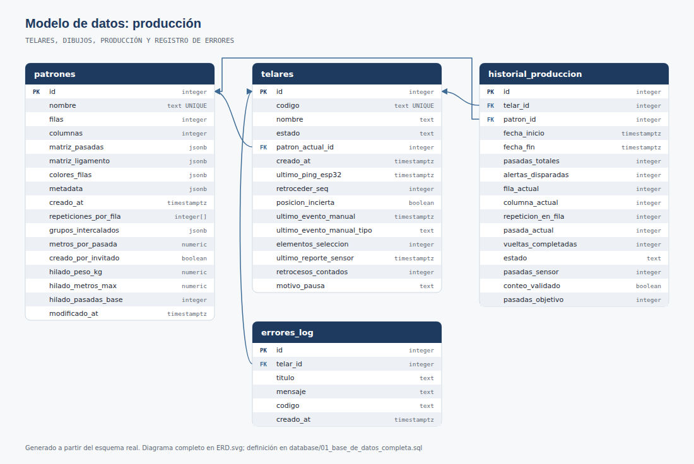
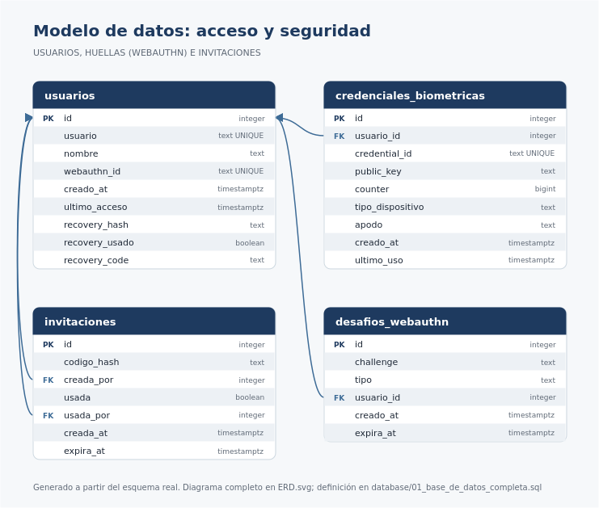
Probalo: armá un dibujo y ejecutalo
Cada fila es una pasada y lleva una sola bobina, porque en cada pasada entra una sola trama. Si tocás otra celda de la misma fila, la anterior se desmarca sola, igual que en la aplicación.
3.2.4. Estructura de los Campos JSONB (matriz_pasadas y matriz_ligamento)
En la aplicación web, cada celda de la grilla del editor vale 0 o 1: la bobina de esa columna se activa o no. Cada FILA de matriz_pasadas lleva como máximo una bobina activa, porque en cada pasada entra una sola trama (el servidor rechaza una fila con dos). Para alternar bobinas, grupos_intercalados agrupa filas seguidas ({desde, hasta, pasadas}, con índices desde 0): sus filas se recorren en orden, cada una sus repeticiones, hasta completar las pasadas del grupo; para la posición, el grupo cuenta como una sola fila larga que empieza en su primera fila. Cada fila común se teje durante tantas pasadas seguidas como indique su número en repeticiones_por_fila (de 1 a 9999; sin ese dato, una pasada por fila). Así una fila con 100 repeticiones son 100 pasadas de la misma bobina, sin tener que dibujar 100 filas iguales. Una fila sin ninguna celda activa sigue siendo una pasada válida, en la que no se activa ninguna bobina. El campo matriz_ligamento guarda la misma grilla en formato binario, para la representación visual del dibujo.
{
"nombre": "Dos bobinas alternadas",
"filas": 4,
"columnas": 4,
"matriz_pasadas": [
[1, 0, 0, 0],
[0, 1, 0, 0],
[1, 0, 0, 0],
[0, 1, 0, 0]
],
"matriz_ligamento": [
[1, 0, 0, 0],
[0, 1, 0, 0],
[1, 0, 0, 0],
[0, 1, 0, 0]
],
"repeticiones_por_fila": [1, 1, 1, 1],
"colores_filas": ["#16304F", "#0F2238", "#16304F", "#0F2238"]
}
3.3. Características de los Usuarios Buenas Prácticas UTN p.56/57
| Tipo de usuario | Formación | Actividades |
|---|---|---|
| Dueño de la fábrica | Formación técnica en el oficio textil, adquirida en la práctica. Sin formación informática formal; maneja el celular a nivel de usuario. | Define qué dibujos se tejen y valida la producción. Usa la biblioteca para elegir el patrón y la consola de inicio para verificar el avance. |
| Operario de telar | Conocimiento práctico del telar y del oficio. Sin formación informática. Trabaja con protectores auditivos y guantes. | Carga el dibujo, arranca y pausa la máquina, y corrige la posición con Retroceder ante una rotura de hilo. Es el usuario principal del sistema. |
| Encargado de mantenimiento | Conocimientos de electricidad y mecánica industrial. Nociones básicas de electrónica. | Interviene ante fallas del nodo de control: revisa el gabinete, las conexiones y el estado de los relés siguiendo el manual de instalación. |
| Equipo de desarrollo | Estudiantes de 7mo año de la especialidad Informática. | Mantiene el software y el firmware, aplica las migraciones de base de datos y ejecuta el plan de respaldo y recuperación. |
Tabla 4. Características de los usuarios del sistema.
3.4. Restricciones Buenas Prácticas UTN p.57
3.4.1. Políticas reguladoras:
Toda la arquitectura lógica se apoya en el uso de plataformas y herramientas libres, abiertas y sin costos de licenciamiento corporativo: Arduino IDE 2 y sus librerías (WiFi.h, HTTPClient, ArduinoJson), Node.js con Express para el backend, PostgreSQL como motor de base de datos y el plan gratuito de Neon para su alojamiento en la nube.
3.4.2. Interfaces con otras aplicaciones
El firmware del ESP32 se acopla al backend propio (Node.js/Express) exclusivamente por HTTP: sondea el endpoint GET /api/telares/8?origen=esp32 cada 2,5 s (8 es el id del telar en la base, TELAR_ID en el firmware) para conocer el estado deseado del telar avisa los usos manuales de la botonera por POST /api/telares/8/evento-fisico y reporta fallas por POST /api/errores. No existe integración con Firebase ni con bases de datos de series temporales externas: toda la persistencia vive en la misma base PostgreSQL (Neon) que usa la web.
3.4.3. Función de control
El sistema implementa un login biométrico mediante huella dactilar (estándar WebAuthn/FIDO2). La huella nunca se guarda ni viaja al servidor: el dispositivo del usuario genera un par de llaves, la privada permanece en el hardware del teléfono y solo la pública se envía al servidor para verificar la firma del desafío en cada inicio de sesión. Los primeros 3 usuarios pueden registrarse libremente; a partir del cuarto, el alta requiere un código de invitación generado por un usuario ya registrado (vence a los 7 días). Si el usuario cambia de dispositivo o pierde el acceso a su huella, puede entrar con su usuario y su código de recuperación: un código fijo, entregado al momento de registrar la huella, que se puede volver a ver desde el perfil (verificando antes la huella) y que se guarda cifrado (nunca en texto plano).
3.4.4. Requisitos del lenguaje
Las interfaces gráficas y los manuales de usuario deben ser desarrollados completamente en idioma español, adaptados al vocabulario propio de la fábrica textil. El firmware requiere lenguaje C++ simplificado.
3.4.5. Protocolos señalados
Conectividad inalámbrica Wi-Fi (802.11 b/g/n) entre el ESP32 y el router de fábrica. La comunicación entre la web, el backend y el ESP32 se realiza íntegramente por HTTP/API REST (JSON sobre HTTPS): no se utiliza MQTT ni WebSockets en el stack actual. El ESP32 no ejecuta ninguna acción cuando el Wi-Fi o el backend no responden (fail-safe): el telar queda gobernado por su botonera física, conectada en paralelo y que nunca deja de funcionar.
- El sondeo del ESP32 al backend (Nivel 1) es simple: consulta el estado del telar (apagado/tejiendo/pausado/error) y, ante un cambio, dispara un pulso de 300 ms en el relé de Marcha o de Pausa correspondiente; cada pedido de Retroceder desde la web da un pulso en su relé, siempre después de la Pausa. Para el Nivel 2 (control de las bobinas de selección), la secuencia completa del patrón se descarga una única vez a memoria del ESP32 y se ejecuta localmente pasada a pasada, sin depender de la red; el avance se reporta al backend como conteo acumulado (cada segundo mientras teje y una vez más al detenerse): si un reporte se pierde por la red, el siguiente trae el número correcto igual. La siguiente tabla resume los endpoints principales que consumen el ESP32 y la web:
| MÉTODO Y ENDPOINT | CONSUMIDOR | DESCRIPCIÓN |
|---|---|---|
| GET /api/telares/8 | ESP32 (sondeo c/2,5s) | Estado deseado del telar (apagado/tejiendo/pausado/error) y patrón asignado. |
| POST /api/telares/:id/asignar-patron | Web | Asigna un patrón al telar y abre una fila en historial_produccion (posición 0,0,0). |
| POST /api/telares/:id/avanzar | ESP32 / Web | Avanza la posición por reloj (una pasada cada 200 ms) mientras no haya sensor; nunca “termina”, vuelve a la fila 0 y suma vueltas_completadas. Con el sensor activo responde 409 y la posición la lleva el ESP32. |
| POST /api/telares/:id/retroceder | Web | Retrocede una pasada completa (RF08); desde la primera fila vuelve a la última (el dibujo es un lazo) y lo indica con al_inicio: true. |
| POST /api/errores | ESP32 | Registra una falla del firmware o de la comunicación en errores_log. |
Tabla 5. Endpoints principales de la API consumidos por la web y el ESP32.
3.4.6. Requisitos de fiabilidad
Ante la falta de señal o pérdida de conectividad, el firmware del ESP32 no ejecuta ninguna acción sobre el telar: no arranca ni pausa por su cuenta, y la botonera física sigue funcionando en paralelo sin interrupciones. Este comportamiento a prueba de fallos es el criterio rector del sistema. El conteo de pasadas se resuelve mediante el sensor inductivo del Bloque C, incluido en el alcance de esta etapa. El sensor se monta sobre un eje del telar que completa un giro por pasada y entrega un pulso por cada una, de modo que el avance registrado por el sistema corresponde al movimiento real de la máquina y no a una estimación por tiempo. Su punto exacto de montaje se determina con el telar en marcha, identificando qué eje guarda esa relación de giro, y se fija mediante una escuadra tomada de un tornillo existente del chasis, sin perforar la máquina. Hasta que el sensor esté instalado y calibrado, el avance mostrado es una estimación y puede desfasarse si el telar trabaja a una velocidad distinta de la prevista; ese desfase se corrige con la función de confirmación de posición.
3.4.7. Credibilidad de la aplicación
Para evitar avisos incorrectos, el algoritmo valida la interpretación de los pulsos del sensor de pasada durante un período inicial de prueba, comprobando que el conteo de ciclos coincida con la operación real de la máquina antes de habilitar cualquier notificación basada en esa medición. Mientras esa validación no se complete, el sistema informa únicamente las señales que puede verificar: las órdenes que él mismo envió y los eventos de uso manual de la botonera detectados por el nodo de control.
3.4.8. Consideraciones de seguridad: Inmunidad crítica ambiental
- Inmunidad crítica ambiental: al ser la pelusa textil altamente inflamable y conductora bajo humedad, la placa debe estar protegida con barniz dieléctrico (conformal coating). El nodo de control se aloja en un gabinete estanco IP65 con prensacables, montado sobre pared o columna y no sobre el chasis de la máquina, para que la vibración no afecte las conexiones.
- Aislamiento Eléctrico: Es obligatorio implementar aislamiento galvánico mediante optoacopladores (ej. PC817) para recibir señales del telar, proteger la entrada de alimentación con un fusible lento de 1A y emplear cable multifilar común de 1 mm² para las líneas de control. El blindaje no resulta necesario: la señal es de contacto seco a 24 V y la máquina no cuenta con variadores de frecuencia, que son la fuente de ruido que lo justificaría.
- Respaldo y recuperación de datos: toda la información del sistema (patrones, historial de producción y usuarios) vive en la base de datos alojada en Neon. La protección se organiza en tres capas: la restauración instantánea que ofrece el propio servicio, con una ventana de 6 horas en el plan actual; un respaldo automático diario mediante una tarea programada que ejecuta pg_dump y guarda el volcado comprimido en un repositorio externo; y una copia manual antes de cada migración o demostración. La recuperación se elige según el momento en que se detecte el problema: dentro de las 6 horas, restauración instantánea sin cambiar la cadena de conexión; pasado ese plazo, restauración desde el último respaldo diario, con una pérdida máxima de un día de trabajo. Un respaldo que nunca se probó no es un respaldo: se incluye una restauración de prueba sobre una base de desarrollo en cada visita de mantenimiento.
3.5. Suposiciones y dependencias
- Infraestructura eléctrica: Se confirmó por medición directa que en el telar C201, donde se instala el sistema, la botonera recibe 24V AC (no DC), el valor para el que está calculada la resistencia del sensado. Para otros telares se sigue asumiendo 24V DC o 220V AC hasta confirmar caso por caso. La placa de monitoreo no se alimenta desde esa línea: usa una fuente propia de 220V, independiente del telar.
- Integración técnica: El éxito de la implementación depende de la aprobación formal del encargado para realizar la integración técnica con el cableado de control del telar (retrofit de señales) y de la ejecución de visitas técnicas complementarias para evaluar la cobertura real del Wi-Fi en los pasillos de producción y realizar la toma de mediciones eléctricas precisas sobre las líneas nativas de la máquina.
- Información operativa: Dimensiones exactas de fábrica, turnos de trabajo y cantidad de telares en operación activa:
- Dimensiones: 400 m²
- Turnos de Trabajo: Jornada de 10 horas de Lunes a Sábado
- Cantidad de telares (operando activamente): 6
3.6. Evolución previsible del sistema
En la Fase 2 (Autonomía) se prevé la eliminación total de la dependencia de conectividad a internet mediante la instalación física en fábrica de un servidor local redundante que centralice el alojamiento absoluto de la base de datos PostgreSQL y las interfaces, garantizando la continuidad operativa incluso ante fallas de la red externa. Mientras que en la Fase 3 (Escalamiento y Digitalización) se proyecta escalar la solución a toda la flota de telares de la fábrica. En esta etapa, el desarrollo se centrará en optimizar los algoritmos de filtrado y procesamiento de las señales nativas (24V) para incrementar la precisión en la métrica de ciclos y paradas sin añadir hardware externo. Finalmente, se evaluará la migración del mecanismo Jacquard mecánico a un sistema electrónico de selección digital de matrices, logrando la sincronización total de la maquinaria con la base de datos central de secuencias de tejido.
4Requisitos Específicos
4.1. Requerimientos funcionales Buenas Prácticas UTN p.59/60
| ID | Nombre | Tipo | Descripción | Prioridad | Estado |
|---|---|---|---|---|---|
| RF01 | Interfaz base y consola de inicio | Esencial | Panel de inicio de alto contraste que divide el espacio entre el área de control y la visualización del dibujo en curso, legible con guantes y a distancia. | Alta | Implementado |
| RF02 | Editor matricial interactivo | Esencial | Lienzo cuadriculado donde el operario dibuja el ligamento tocando las celdas. Cada fila lleva una sola bobina (una trama por pasada), que se teje en una o más pasadas seguidas, y cada columna es una bobina de selección. | Alta | Implementado |
| RF03 | Configuración dinámica de dimensiones | Esencial | Permite definir filas y columnas de la matriz (de 1 a 300 filas, y de 1 a 8 columnas, una por bobina de selección), para adaptarse a distintos telares sin tocar el código. | Alta | Implementado |
| RF04 | Herramientas de agilidad en el diseño | Deseable | Limpiar la grilla, repeticiones por fila (una fila se teje hasta 9999 pasadas seguidas sin dibujarla de nuevo), Intercalar (agrupa filas seguidas para que se alternen pasada por pasada, como las de las bobinas 1, 3, 4 y 2 durante 120 pasadas), simulador de color de hilo y ficha técnica en PDF, para acelerar el trabajo del operario. | Media | Implementado |
| RF05 | Persistencia CRUD de dibujos | Esencial | Biblioteca que permite crear, consultar, modificar y eliminar los dibujos guardados en la base de datos. | Alta | Implementado |
| RF06 | Comandos de ejecución de máquina | Esencial | Botones de Marcha, Pausa y Retroceder que accionan los relés del ESP32 sobre la botonera del telar. El botón Detener fue eliminado: la función la cumple Pausa. | Alta | Implementado |
| RF07 | Realimentación visual en tiempo real | Esencial | Mientras el telar teje, la pantalla resalta la fila que se está ejecutando y muestra el estado real de la máquina. | Alta | Implementado |
| RF08 | Retroceso de una pasada | Esencial | Permite retroceder el tejido una pasada completa: pausa la ejecución, mueve la posición una pasada atrás y pulsa el relé de Retroceder del telar. | Alta | Implementado |
| RF09 | Resiliencia ante caídas de red | Esencial | Ante cortes de WiFi o caída del backend, el firmware permanece inactivo (fail-safe) en vez de accionar la máquina con información desactualizada. | Alta | Implementado |
| RF10 | Sensado del uso manual de la botonera | Esencial | Si un operario aprieta Marcha, Pausa o Retroceder en la máquina, el ESP32 lo detecta por optoacoplador y la web refleja el estado real del telar. | Alta | Implementado |
Tabla 6. Requerimientos funcionales del sistema.
4.2. Requerimentos No Funcionales (RNF) Buenas Prácticas UTN p.59/60
| ID | Categoría | Nombre | Descripción | Prioridad |
|---|---|---|---|---|
| RNF01 | Desempeño | Desempeño y latencia | El ESP32 sondea el backend cada 2,5 s y el pulso del relé dura 300 ms: una orden dada en la web se refleja en la máquina en menos de 3 segundos. | Alta |
| RNF02 | Fiabilidad | Arranque seguro | Al energizarse o reiniciarse, ningún relé debe accionarse. Se garantiza con resistencias de polarización externas y escribiendo el nivel de reposo antes de configurar los pines. | Crítica |
| RNF03 | Usabilidad | Ergonomía de interfaz táctil | Botones de al menos 44 px, alto contraste y tipografía legible, para poder operarse con guantes y con la iluminación deficiente de la fábrica. | Alta |
| RNF04 | Seguridad | Aislamiento eléctrico | Todo contacto con el telar se hace por contacto seco de relé u optoacoplador. El sistema se alimenta de una fuente propia de 220 V, independiente de la máquina. | Crítica |
| RNF05 | Mantenibilidad | Respaldo y recuperación de datos | Restauración instantánea de 6 horas más respaldo automático diario. La restauración se prueba en cada visita de mantenimiento. | Alta |
| RNF06 | Portabilidad | Independencia de dispositivo | Funciona en el navegador de cualquier celular o computadora de la fábrica, sin instalación previa. | Media |
| RNF07 | Fiabilidad | Tolerancia ambiental | Gabinete IP65 montado fuera del chasis para no recibir vibración, con la placa protegida con barniz dieléctrico contra la pelusa textil. | Alta |
Tabla 7. Requerimientos no funcionales del sistema.
4.3. Interfaces de usuario Buenas Prácticas UTN p.58
Debido a las severas restricciones del entorno textil, se descartan los canales sonoros por ser inaudibles a >99 dB. Las pantallas de visualización deben estructurarse con esquemas de alto contraste (fondo oscuro y texto claro de grandes dimensiones) y complementarse con indicadores luminosos que sean legibles a una distancia normal.
| ID | Interfaz | Tipo | Descripción | Restricción de entorno | Estado |
|---|---|---|---|---|---|
| RIU01 | Pantalla de ingreso | Visual | Acceso mediante huella dactilar, con recuperación por código fijo para el caso de que el lector falle. | Debe operarse con una sola mano y con guantes. | Implementado |
| RIU02 | Pantalla de inicio | Visual | Estado del telar en tiempo real, dibujo cargado y accesos a las funciones principales. | Legible a un metro de distancia. | Implementado |
| RIU03 | Editor de dibujo | Visual y táctil | Grilla binaria donde cada fila lleva una sola bobina (una trama por pasada), que se teje en una o más pasadas seguidas, y cada columna es una bobina de selección. | Celdas de al menos 40 píxeles, operables con guantes. | Implementado |
| RIU04 | Controles de ejecución | Táctil | Botones de Marcha, Pausa y Retroceder, correspondientes a los tres relés del nodo. | Separación suficiente para evitar pulsaciones accidentales. | Implementado |
| RIU05 | Biblioteca de dibujos | Visual | Listado de los dibujos guardados, con búsqueda y filtros. | Contraste alto sobre fondo claro u oscuro. | Implementado |
| RIU06 | Avisos del sistema | Visual | Mensajes emergentes que informan el resultado de cada acción y el motivo de los errores. | No se usan avisos sonoros: el ambiente supera los 99 dB. | Implementado |
| RIU07 | Modo oscuro | Visual | Alternancia entre paleta clara y oscura, para reducir la fatiga visual en jornadas largas. | Ambas paletas superan la relación de contraste AAA. | Implementado |
Tabla 8. Interfaces de usuario del sistema (Buenas Prácticas UTN, p. 58).
4.3.1. Diseño de interfaz:
El mockup de alta fidelidad fue presentado y validado con el cliente en dos instancias: la relevación inicial de UX/UI del 12/05/2026 y la validación de mockup del 24/06/2026. Tras esa segunda validación se aplicaron los ajustes descritos en el Registro de Cambios del Mockup y se avanzó a la maquetación en HTML/CSS/JS conectada al backend.
Flujos Clave de la Interfaz:
Inicio:
Muestra quién inició sesión (o el aviso de modo invitado) y el dibujo que está en edición, con accesos directos al Editor y a la Biblioteca.
- Permite consultar el código de recuperación, invitar a otra persona a registrarse y activar el modo oscuro.
- El estado del telar y los controles de tejido no están en esta pantalla sino en el Editor, junto al dibujo que se teje.
Editor de Dibujo:
Grilla interactiva donde cada fila lleva una sola bobina (una trama por pasada), que se teje en una o más pasadas seguidas, y cada columna es una bobina de selección: tocar una celda la activa o la desactiva para esa pasada. Al costado de cada fila se indica cuántas pasadas seguidas se teje (de 1 a 9999).
- Barra con el estado del equipo del telar (conexión, tejido y conteo del sensor) y controles ▶, Pausa, Retroceder y Terminar trabajo (⏹), que actúan sobre los relés del Bloque A. No se implementa una parada de emergencia por software: esa función la conserva la botonera física del telar, que sigue operable en todo momento.
Validación del tamaño (de 1 a 300 filas y de 1 a 8 columnas, una por bobina): un valor fuera de rango se informa y se corrige. Una sola bobina por fila: al marcar otra, la anterior se desmarca; las filas de un intercalado se alternan pasada por pasada. Herramientas: Limpiar, Intercalar, simulador de color de hilo y ficha técnica en PDF.
Biblioteca de Dibujos:
Listado de los dibujos guardados, con sus operaciones de creación, lectura, actualización y eliminación a través del backend.
Búsqueda por nombre, que no distingue mayúsculas ni tildes.
Estadísticas de cada dibujo: veces tejido, pasadas, metros y horas de máquina (aproximadas hasta que se valide el conteo del sensor).
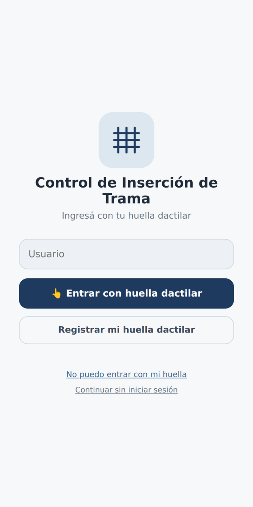
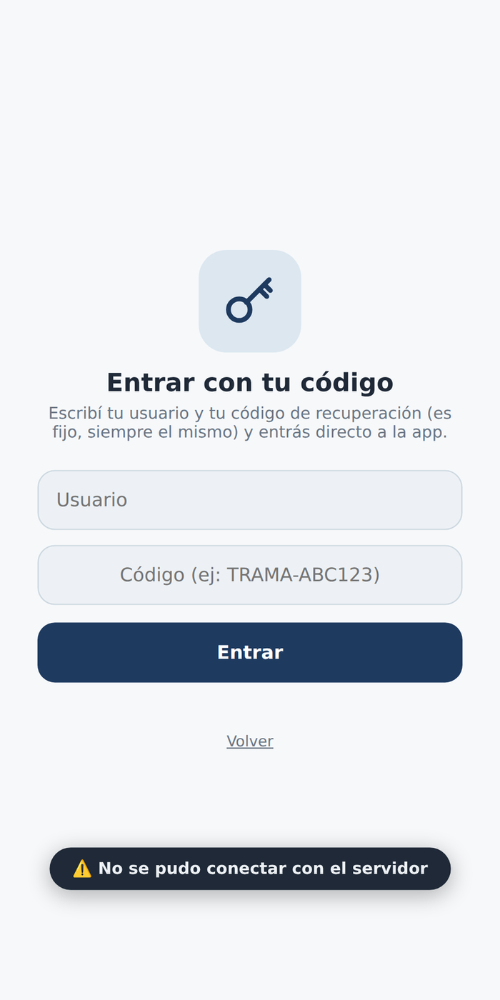
4.3.2. Visualización del Producto Físico
Al tratarse de un proyecto de retrofit sobre una máquina existente, el producto físico no es un objeto de diseño industrial nuevo sino un gabinete de control que se monta junto al telar. Por ese motivo, en lugar de un modelado tridimensional se documenta el equipo real ya construido, que cumple la misma función de mostrar al cliente cómo se ve y dónde se instala lo que recibe.
Las pantallas de la aplicación
Interfaz pensada para operarse desde el celular en la planta: botones grandes, alto contraste y sin instalación previa.
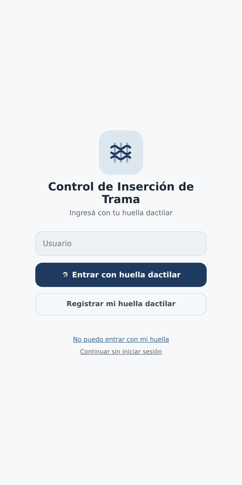
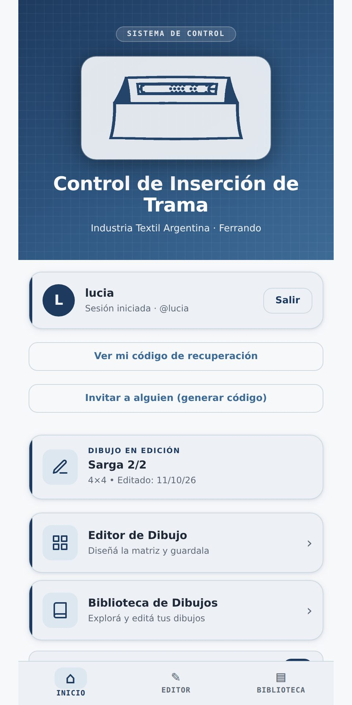
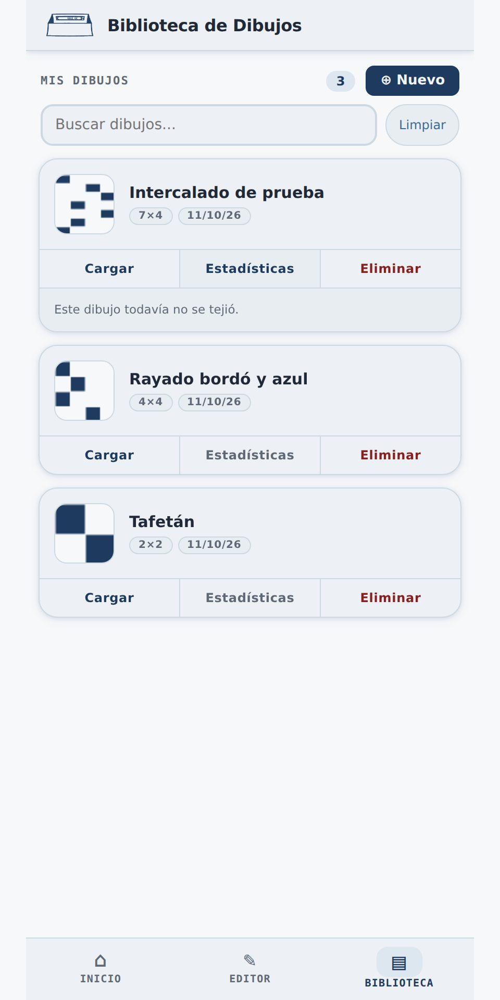
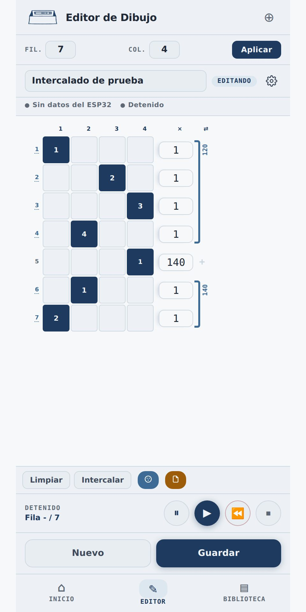
4.4. Interfaces de software Buenas Prácticas UTN p.59
Las interfaces de software del sistema se detallan en la tabla siguiente. El principio de diseño es que todos los clientes -web, aplicación móvil y microcontrolador- consumen la misma API REST, de modo que las reglas de negocio (transacciones, validaciones y bloqueos) se apliquen por igual a todos ellos.
| ID | Interfaz | Descripción | Protocolo / formato |
|---|---|---|---|
| ISW01 | Backend REST (Node.js + Express) | La página web y el ESP32 consultan y modifican los datos exclusivamente por la API. Ningún cliente accede a la base de datos directamente. | JSON sobre HTTPS |
| ISW02 | PostgreSQL (Neon) | Almacena patrones, historial de producción, usuarios y registro de errores. El backend es el único que se conecta. | Driver pg / SQL |
| ISW03 | Navegador del operario | Ejecuta la aplicación web sin instalación previa. Requiere navegador con soporte de WebAuthn para el ingreso biométrico. | HTML5 / CSS / JS |
| ISW04 | Firmware ESP32 (Arduino) | Consulta el estado del telar cada 2,5 s y reporta el uso manual de la botonera. Usa la misma API que la web. | HTTP + ArduinoJson |
| ISW05 | Servicio de despliegue (Render) | Aloja el backend y sirve la aplicación web. En plan gratuito el servicio se suspende tras 15 minutos de inactividad. | HTTPS |
Tabla 9. Interfaces de software del sistema (ISW).
La programación del microcontrolador se realiza sobre la herramienta gratuita Arduino IDE 2 en lenguaje C++. Utiliza librerías de código abierto sin costos de adquisición: WiFi.h para la gestión de la red, HTTPClient para las consultas HTTP al backend propio y ArduinoJson para el desempaquetado de las respuestas del servidor. No se emplea ningún SDK ni servicio de Firebase.
4.5. Interfaces de comunicación Buenas Prácticas UTN p.59
El microcontrolador ESP32-WROOM-32 se comunica exclusivamente por Wi-Fi con el backend propio (Node.js/Express) mediante peticiones HTTP/REST en JSON: sondea GET /api/telares/8?origen=esp32 cada 2,5 s (8 es el id del telar en la base, TELAR_ID en el firmware) para conocer el estado deseado del telar, avisa los usos manuales de la botonera con POST /api/telares/8/evento-fisico y reporta fallas con POST /api/errores. El backend, es el único intermediario entre el ESP32, la web y la base de datos PostgreSQL alojada en Neon; no se utiliza MQTT, WebSockets ni ningún broker intermedio en el stack actual.
4.6. Interfaces de hardware (RHW) Buenas Prácticas UTN p.59
Las interfaces de hardware describen cada punto de contacto físico entre el nodo de control y el telar. El criterio transversal es que el sistema nunca invade la lógica eléctrica de la máquina: actúa por contacto seco y lee por aislamiento óptico.
| ID | Interfaz | Sentido | Descripción | Pin |
|---|---|---|---|---|
| RHW01 | Relé de Marcha | Salida | Contacto seco (COM/NO) en paralelo al botón Marcha de la botonera. Pulso de 300 ms. | GPIO 25 |
| RHW02 | Relé de Pausa | Salida | Contacto seco en paralelo al botón Pausa. Es el único medio de parada por software. | GPIO 26 |
| RHW03 | Relé de Retroceder | Salida | Contacto seco en paralelo al botón Retroceder. Módulo individual, de polaridad de activación opuesta a la del módulo de 2 canales que cubre Marcha y Pausa. | GPIO 27 |
| RHW04 | Sensado de Marcha | Entrada | Optoacoplador PC817 con puente rectificador: detecta que un operario apretó el botón a mano. | GPIO 32 |
| RHW05 | Sensado de Pausa | Entrada | Ídem RHW04, sobre el botón Pausa. | GPIO 33 |
| RHW06 | Sensado de Retroceder | Entrada | Ídem RHW04, sobre el botón Retroceder. GPIO de solo entrada: la resistencia externa es obligatoria. | GPIO 34 |
| RHW07 | Alimentación | Energía | Entrada de 220 V con fusible lento de 1 A hacia el módulo HLK-5M05. Independiente del telar. | - |
| RHW08 | Sensor de pasada (Bloque C) | Entrada | Sensor inductivo LJ12A3-4-Z/BX sobre un eje del telar: entrega un pulso por pasada, lo que permite contar el avance real de la máquina. Su salida se adapta a 3,3 V mediante optoacoplador. | GPIO 35 |
Tabla 10. Interfaces de hardware del nodo de control (RHW).
La botonera del telar
Los cinco pulsadores de la máquina, repartidos en dos tableros. El sistema interviene los tres del tablero principal; los dos del secundario quedan fuera del alcance por encontrarse desconectados.
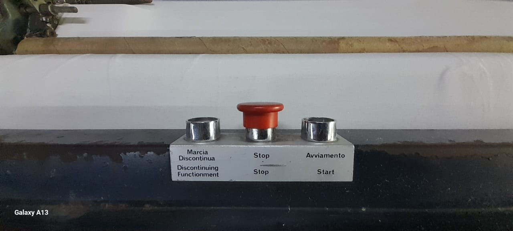
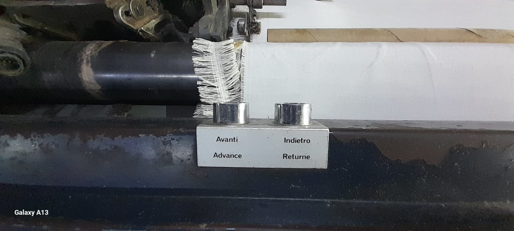
4.7. Limitaciones del alcance (LIM)
Se registran explícitamente las funciones que quedan fuera del alcance de esta entrega, con el motivo de la exclusión y su continuidad prevista. Cada limitación se corresponde con un punto de la sección de Lineamientos Futuros.
| ID | Limitación | Situación actual | Motivo | Continuidad |
|---|---|---|---|---|
| LIM01 | Control del dibujo por marcos (Nivel 2) | El telar sigue tomando el patrón de su cinta de papel perforada. El sistema todavía no comanda las bobinas de selección: el 10/10/2026 el circuito se probó en protoboard y funcionó, y se está haciendo la plaqueta para la prueba en la máquina. | El punto de intervención ya está definido (la señal de cada lector óptico). Falta medir la salida de un lector y armar y probar los Bloques C y D. | Lineamiento futuro |
| LIM02 | Conteo real de pasadas, RESUELTO EN ESTA ETAPA | El sensor inductivo del Bloque C se incorpora al alcance de esta entrega. | Su punto de montaje quedó definido el 10/09/2026, sobre un eje que da una vuelta por pasada; el 10/10/2026 se probó en protoboard con el ESP32 y funcionó. Hasta que el sensor se conecte al Nivel 2 en la máquina y se valide su conteo, el avance es una estimación por tiempo. | Incluido en esta etapa |
| LIM03 | Botones Avanzar e Impulso | Quedan fuera del sistema: no se accionan ni se sensan. | Se encuentran desconectados en la máquina, según relevamiento. | Excluido |
| LIM04 | Aplicación Android | Se entrega solo la base de arquitectura, sin funcionalidad. | El producto de esta etapa es la aplicación web, accesible desde el navegador del celular. | Lineamiento futuro |
| LIM05 | Placa de circuito impreso a medida | La entrega se realiza sobre placa universal perforada soldada. | El diseño y fabricación de un PCB propio solo se justifica ante una producción en serie. | Lineamiento futuro |
| LIM06 | Enlace de Internet redundante | Se utiliza el servicio existente de la fábrica, sin respaldo por red móvil. | El sistema es fail-safe: ante un corte, el telar sigue operable a mano y no se detiene la producción. | Lineamiento futuro |
| LIM07 | Operación de múltiples telares | El nodo controla un único telar, identificado en su configuración. | La arquitectura ya contempla varios telares en la base de datos; falta el hardware de cada nodo adicional. | Lineamiento futuro |
Tabla 11. Limitaciones del alcance de la entrega (LIM).
5Hardware
Esta sección consolida todas las especificaciones técnicas de hardware del proyecto: las limitaciones eléctricas del ESP32, el flujo de acondicionamiento de señal entre el telar (24V) y el microcontrolador (3,3V), las protecciones industriales, el gabinete físico y la lista de componentes por bloques de compra.
5.1. Limitaciones y Consideraciones Eléctricas
El ESP32 opera estrictamente a 3,3V, mientras que las señales nativas del telar trabajan bajo el estándar de 24V, exigiendo etapas intermedias de acondicionamiento y aislamiento. El chip genera calor interno por el uso constante del Wi-Fi y debido a eso, debe colocarse en un gabinete adecuadamente ventilado y separado de las fuentes de mayor ruido electromagnético (EMI) de los motores, para evitar reseteos provocados por picos inductivos. Las conexiones de 5 V y masa de la placa se hacen con cable o puentes de estaño de 0,8 mm a 1 mm, para evitar caídas de tensión cuando enganchan los relés.
5.2. Acoplamiento Electrónico y Cableado
Las señales de control de 24V nativas del telar interactúan con la placa del ESP32 de forma aislada mediante optoacopladores rápidos (PC817) para independizar las masas de los motores y proteger el circuito digital. Las interconexiones externas utilizarán cable multifilar de 1 mm² (el unifilar rígido se corta por fatiga ante la vibración del entorno textil), sin blindaje: la señal de contacto seco a 24 V tiene inmunidad de sobra, el telar no cuenta con variador de frecuencia y su electrónica está alojada en una caja metálica que contiene el ruido en su origen. El nodo emplea borneras de conexión atornillables instaladas directamente en la placa para la alimentación y el direccionamiento seguro de las señales lógicas hacia las etapas de potencia, manteniendo todo el cableado protegido dentro del gabinete principal.
El armado en banco
Etapa de validación previa a la instalación: el circuito montado sobre protoboard para verificar el arranque seguro, la polaridad de cada relé y la comunicación con el backend. La entrega final se realiza sobre placa universal soldada.
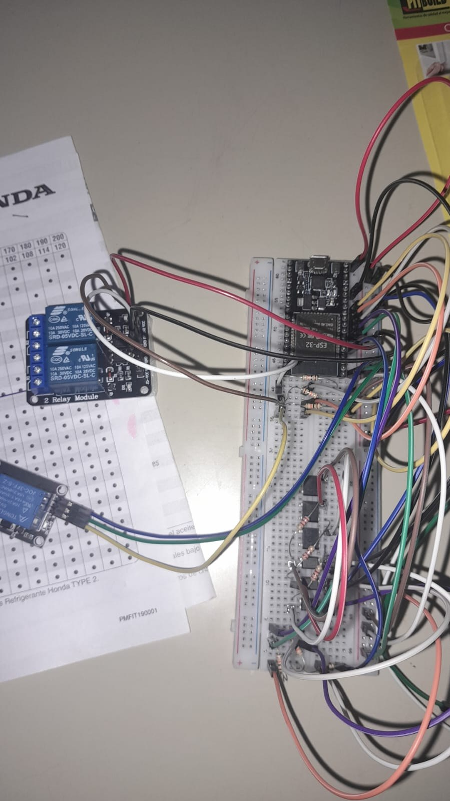
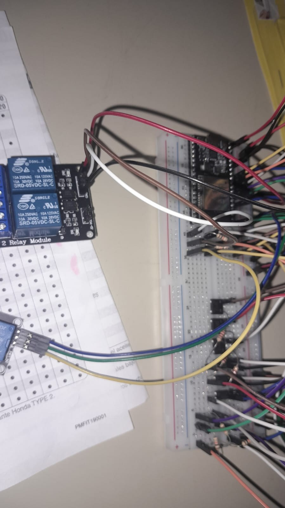
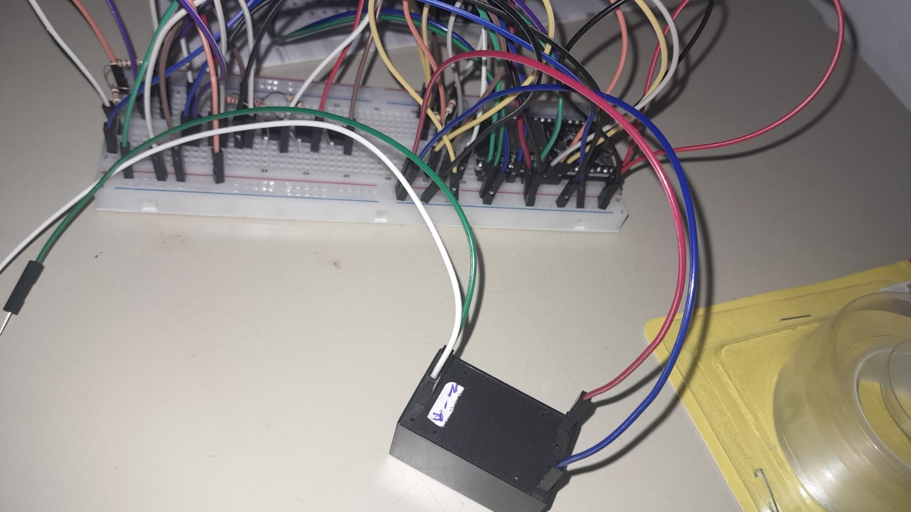
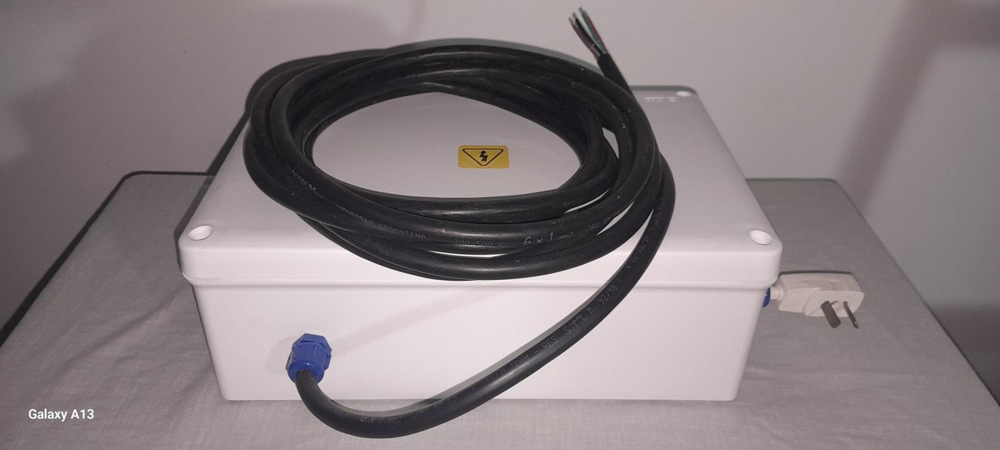
5.3. Flujo Secuencial del Acondicionamiento de Hardware
- Paso 1 (Entorno de Maquinaria 24V AC): Líneas de control de la botonera del telar, confirmadas por medición directa en 24V AC (no DC) en el C 201, el telar donde se instala el sistema. Los relés las intervienen mediante contacto seco (COM/NO), sin acoplarse eléctricamente a ellas.
- Paso 2 (Alimentación y Protección de Entrada): Fusible lento de 1A en la entrada de 220V AC, según recomendación del datasheet del módulo de alimentación. La alimentación es independiente de la línea de 24V del telar, por lo que la protección se concentra en la entrada de red.
- Paso 3 (aislamiento de señal): optoacopladores PC817 con puente rectificador (DB157) y resistencia limitadora de 2,2 kΩ 1 W, empleados para sensar los mismos tres botones que los relés accionan -Marcha, Pausa y Retroceder-. De este modo el nodo detecta cuándo un operario los usa a mano en la máquina, independizando las masas y aislando los 24 V AC de la botonera respecto de los pines del microcontrolador. Para evitar que el sistema interprete sus propios pulsos como acciones manuales, el firmware descarta las detecciones que ocurren dentro de una ventana breve posterior a cada accionamiento de relé.
- Paso 4 (Alimentación Regulada): Módulo de fuente conmutada HLK-5M05 (220V AC a 5V DC, 1A), independiente del telar y montado dentro del gabinete IP65.
- Paso 5 (Buses de Control): Buses de comunicación y señales lógicas conectadas directamente a los Pines GPIO del microcontrolador.
- Paso 6 (Cerebro del Nodo): Microcontrolador ESP32-WROOM-32 (Soldado directo a pistas, en tablero separado IP65), con código C++ protegido por temporizador de hardware de 15 s, encargado de sondear por Wi-Fi/HTTP el estado del telar en el backend cada 2,5 s y accionar los relés de Marcha, Pausa y Retroceder.
El nodo de control terminado
Estado del hardware al 05/09/2026: el Bloque A montado dentro del gabinete estanco, con la fuente propia, el fusible de línea, los tres relés, la etapa de sensado y el cable hacia la botonera. Listo para instalar en la planta.
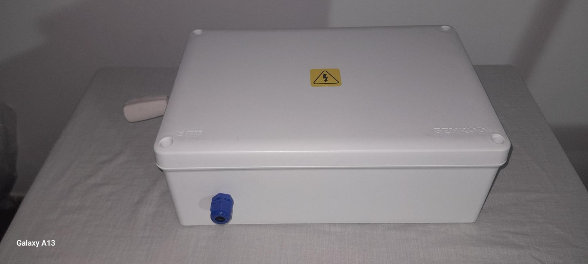
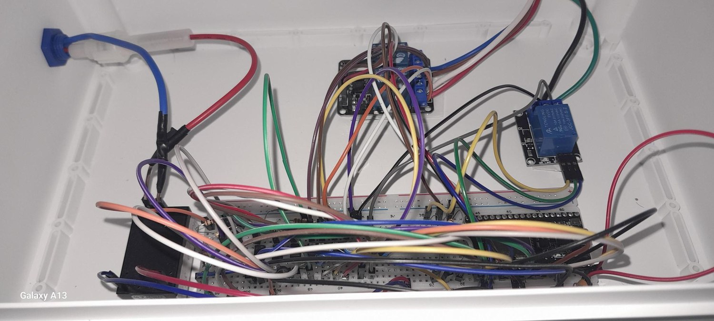
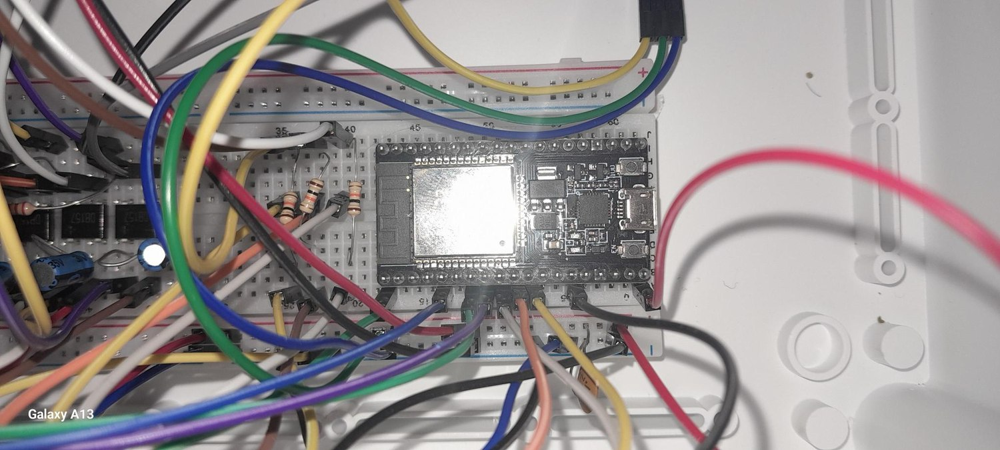
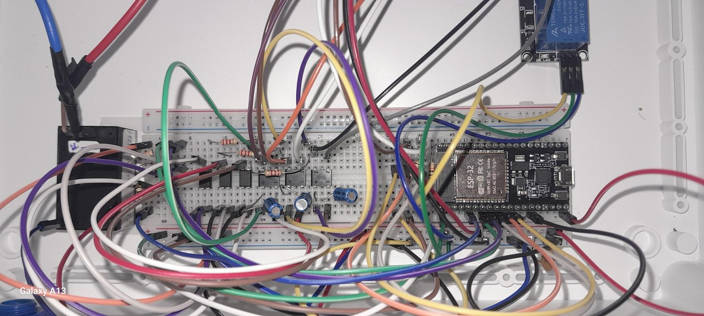
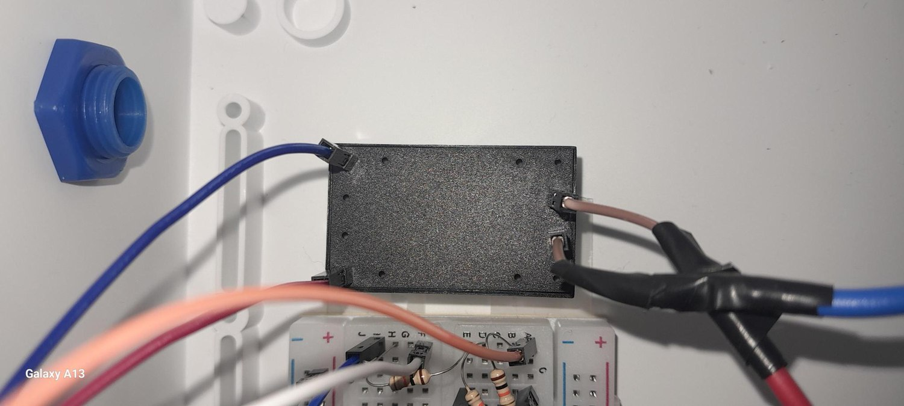
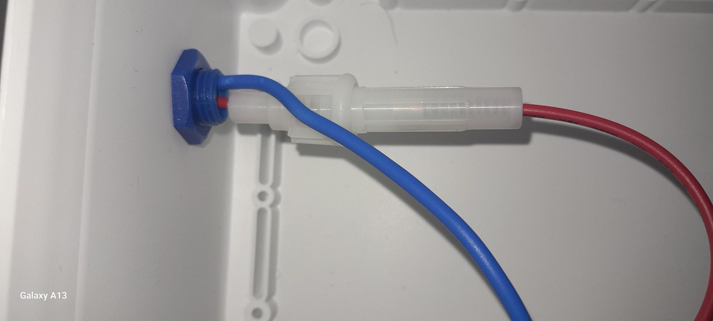
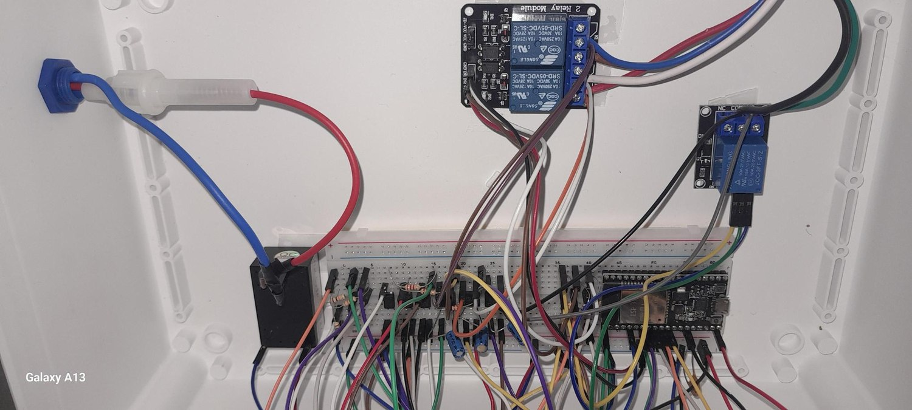
5.4. Protección Industrial e Inmunidad Electromagnética (EMI)
Para operar en un entorno industrial con alta presencia de ruido inductivo generado por los motores del telar, la placa de control incorpora dos niveles de protección eléctrica:
Aislamiento Galvánico por Optoacopladores (PC817):
Separa físicamente los 24V de la etapa de potencia/sensores de los 3.3 V del microcontrolador ESP32.
Soporta tensiones de aislamiento de hasta 5000VRMS, evitando que transitorios o cortocircuitos en el telar dañen el procesamiento central.
Inmunidad a Interferencia Electromagnética (EMI):
Placa universal perforada con la zona de 3,3 V separada de la de los relés, y una sola referencia de masa para todo el nodo, evitando bucles de masa (ground loops). Los 24 V del telar no llegan a la placa: quedan del otro lado de los relés y de los optoacopladores.
Desacople de la alimentación: un capacitor electrolítico de 470 µF en el bus de 5 V, que sostiene la tensión cuando engancha un relé, y capacitores cerámicos de 100 nF junto al ESP32 y junto a cada módulo de relé.
5.5. Gabinete y Protección Física
Para garantizar la durabilidad del hardware de control en el ambiente textil, se diseñó un gabinete estanco con las siguientes características constructivas:. La disposición interna definitiva de los componentes dentro del gabinete se documenta mediante fotografías del armado real, una vez montada la placa sobre los separadores.
- Material del Gabinete: Polímero ABS térmicamente estable combinado con tapa de Policarbonato transparente de alta resistencia al impacto (Grado de protección mecánica IK08).
- Grado de Protección: IP65 (Totalmente protegido contra la entrada de polvo y pelusa textil; protegido contra chorros de agua a baja presión en cualquier dirección).
- Prensacables / Pasacables: Entrada de cables sellada mediante 4 prensacables de Nylon PG9 y PG11 con sellado de junta tórica de neopreno, garantizando la hermeticidad de la acometida eléctrica y de sensores.
5.6. Lista de Componentes por Bloques (BOM)
Detalle técnico de los componentes agrupados según el orden de compra recomendado (Bloques A a D). Los montos de cada bloque, en pesos argentinos.
| Bloque | Componente | Función | Cant. |
|---|---|---|---|
| A, Nivel 1 | ESP32 (NodeMCU / WROOM-32) | Cerebro del nodo: consulta el estado en el backend y acciona los relés. | 1 |
| A, Nivel 1 | Módulo relé 2 canales (Songle, 5 V, activo-bajo) + módulo relé individual (Tongling, 5 V, activo-alto) | El de 2 canales cubre Marcha y Pausa; el individual, Retroceder. Se usan dos módulos distintos porque tienen polaridad de activación opuesta, lo que el firmware resuelve por pin. Contacto seco en paralelo a cada botón: no invade la lógica del telar. | 1 |
| A, Nivel 1 | Módulo fuente HLK-5M05 (220 V → 5 V, 1 A) | Alimenta ESP32, relés y sensado. Fuente propia, independiente del telar. | 1 |
| A, Nivel 1 | Fusible lento 1 A + portafusible | Protege la entrada de 220 V del módulo de fuente (valor indicado por su datasheet). | 1 |
| A, Nivel 1 | Optoacoplador PC817 | Sensa el uso manual de cada botón, aislando sus 24 V AC del microcontrolador. | 3 |
| A, Nivel 1 | Puente rectificador DB157 (1 A) | Convierte el 24 V AC del botón en pulsos de continua, antes del optoacoplador. | 3 |
| A, Nivel 1 | Resistencia 2,2 kΩ 1 W | Limita la corriente hacia el LED del optoacoplador. | 3 |
| A, Nivel 1 | Resistencia 10 kΩ | Polarización: 3 para los relés (IN1 e IN2 a 3,3 V; la de Retroceder a GND, porque su módulo es activo-alto) y 3 para el sensado. Evitan el accionamiento fantasma al encender. | 6 |
| A, Nivel 1 | Capacitores: cerámicos de 100 nF y electrolíticos de 22 µF y 470 µF | Los de 100 nF filtran el ruido de conmutación; los de 22 µF mantienen encendido el LED del sensado entre los semiciclos (uno por botón: sin ellos, el ESP32 mandaría avisos solos, sin que nadie apriete nada); el de 470 µF sostiene los 5 V cuando engancha un relé. | 3 + 3 + 1 |
| A, Nivel 1 | Cable multifilar 6 conductores, 1 mm² | Lleva la señal de los 3 botones al gabinete: el mismo par sirve para el relé y para el sensado. Sin blindaje: la señal de 24 V de contacto seco es inmune al ruido de esta máquina. | 3 m |
| A, Nivel 1 | Gabinete IP65, prensacables, borneras y placa perforada | Montaje estanco del nodo, con los componentes soldados y fijados con separadores. | 1 juego |
| B, Medición | Instrumental de medición (prestado) | Verificación de tensiones y continuidad en la máquina. No representa costo para el proyecto. | - |
| C, Sensor de pasada | Sensor inductivo LJ12A3-4-Z/BX (NPN, NO) | Cuenta las pasadas reales del telar, entregando un pulso por cada giro completo del eje. Incluido en el alcance de esta etapa. | 1 |
| C, Sensor de pasada | Optoacoplador PC817 + resistencias de 1,2 kΩ y 10 kΩ | Adapta la salida del sensor al nivel de 3,3 V del ESP32. | 1 juego |
| D, Nivel 2 | Bobinas de selección del dobby (ya instaladas) | El telar de implementación (C 201) cuenta con 4 bobinas de selección en funcionamiento, confirmado con el dueño el 19/09/26. El Nivel 2 prevé intervenir su señal de mando en lugar de reemplazarlas. | 4 |
| D, Nivel 2 | (descartado: registro de desplazamiento 74HC595) | Servía para manejar 8 salidas con pocos pines. Con 4 canales alcanzan los GPIO libres del ESP32, así que se elimina el componente. | 0 |
| D, Nivel 2 | Relé OptoMOS LCA110 de IXYS (DIP-6), uno por lector óptico, en su zócalo | Conmutan la señal de cada lector óptico, reemplazando la interrupción que hoy produce el papel perforado. Un relé mecánico no sirve: el telar hace 5 pasadas por segundo, lo que da hasta 180.000 conmutaciones en una jornada de 10 horas contra las 100.000 de vida útil de un relé común. Tampoco sirve un relé de estado sólido con triac: necesita 0,1 A de corriente mínima para mantenerse encendido y la señal del lector maneja pocos miliamperes. El LCA110 no tiene ese límite y su fuga en apagado es de a lo sumo un microampere. Cada canal lleva una resistencia de 330 ohm entre el pin y la entrada del relé, porque esa entrada es un LED. | 4 + 4 zócalos |
| D, Nivel 2 | Resistencias por canal: 330 Ω y 10 kΩ del lado del ESP32; de protección (220 Ω 2 W o 470 Ω 3 W) y 10 kΩ ½ W del lado del telar | La de 330 Ω limita la corriente del LED de entrada del LCA110 y la de 10 kΩ mantiene la salida en bajo mientras el ESP32 arranca. Del lado del telar, en la conexión final (el relé en lugar del lector), la de protección limita la corriente ante un error de cableado y la de 10 kΩ ½ W deja la señal en 0 V con el relé abierto, como con papel. No hace falta fuente aparte: las bobinas las sigue alimentando el telar y el sistema solo conmuta la señal del lector óptico. | 4 de cada una |
Tabla 12. Lista de componentes por bloque de compra (BOM).
La caracterización del telar no requirió instrumental propio. Los datos de tensión, del mecanismo de selección y del régimen de trabajo se obtuvieron mediante entrevistas con el dueño de la fábrica y la consulta de documentación técnica del fabricante, complementadas con mediciones puntuales realizadas sobre la máquina durante las visitas.
6Oferta de Gestión
6.1. GANTT
Gantt del proyecto
Ocho etapas, 160 tareas, del 16/03/2026 al 14/11/2026. La planilla viva se consulta y edita en línea.
Cashflow del proyecto
Costos de personal por rol y por etapa, semana a semana, con el Valor Actual Neto descontado a la tasa de referencia del sistema bancario. Vive en la misma planilla que el Gantt.
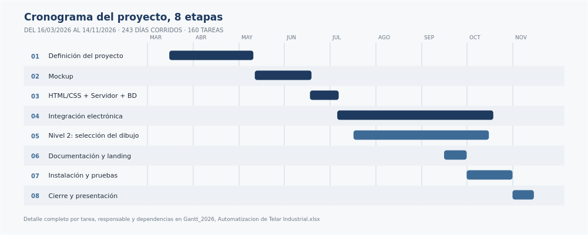
El cronograma completo del proyecto se organiza en ocho etapas de trabajo, desde la definición inicial hasta la presentación final, con un total de 160 tareas distribuidas entre los integrantes del equipo. La figura siguiente resume las etapas, su cantidad de tareas y sus fechas de inicio y cierre.
El cronograma real del proyecto (Gantt_2026 - Automatizacion de Telar Industrial.xlsx) comenzó el 16/03/2026 y proyecta su cierre el 14/11/2026 (243 días corridos), organizado en 8 etapas de trabajo. Estado de avance a la fecha de esta versión de la documentación: El cronograma completo, con las 160 tareas, sus responsables y sus dependencias, se mantiene en la planilla del equipo: el archivo Gantt_2026 - Automatizacion de Telar Industrial.xlsx, disponible en la carpeta compartida del equipo.
Etapas 01 a 03 (16/03 al 06/07/2026, completadas):
Etapa 01, Definición de proyecto: análisis de mercado, dos rondas de entrevistas con el cliente, especificación de requerimientos y elección del proyecto final. Etapa 02, Mockup: investigación de referentes, Design System, wireframes y prototipo de alta fidelidad, validados con el cliente el 24/06/2026. Etapa 03, Armado de HTML/CSS + Servidor + BD: maquetación conectada al backend en Node.js/Express, base de datos PostgreSQL desplegada en Neon.
Etapa 04 (06/07 en adelante, en curso):
Integración Electrónica y Control Físico del Telar: árbol de problemas y soluciones, corrección del MVP con alta del login biométrico, diseño eléctrico y BOM del Nivel 1, compra de componentes, armado de la etapa de potencia (24V→ 5V), cableado ESP32↔relés, firmware en C y prueba integral de Play/Pausa en el telar real.
Diagrama de Tareas de Cátedra:
El seguimiento del proyecto frente al calendario institucional se consolida en cinco hitos académicos, alineados a las 8 etapas reales del Gantt:
HITO 1 (16/03 AL 10/05/2026, Etapa 01, completado): Levantamiento de información y diagnóstico operativo en la fábrica textil. Dos rondas de entrevistas con el cliente, armado del Árbol de Problemas y Soluciones, definición del alcance funcional del retrofit y confección del Product Backlog inicial.
HITO 2 (12/05 AL 06/07/2026, Etapas 02 y 03, completado): Diseño de la arquitectura de software y validación del prototipo de alta fidelidad (sistema de diseño propio: paleta de azules, tipografía IBM Plex Sans y Questrial) con el cliente. Maquetación en HTML/CSS/JS, backend en Node.js/Express y modelado de la base de datos relacional en PostgreSQL (Neon).
HITO 3 (06/07 AL 15/10/2026, Etapas 04 y 05, en curso): Desarrollo del firmware del nodo ESP32 en C++: Nivel 1 (relés de Marcha/Pausa, ya validado en el telar real) y Nivel 2 (control de las bobinas de selección, Revisión 3, diseño cerrado y simulado, a la espera de la medición y la prueba de mesa). Alta del login biométrico WebAuthn y protecciones eléctricas del BOM.
HITO 4 (Etapas 06 y 07, próximas): Integración final de hardware y pruebas de campo en fábrica con los dos niveles de control operando en conjunto, validación de la sincronización de pasada y de la respuesta en tiempo real, e integración total con la base de datos de fábrica.
HITO 5 (hasta 14/11/2026, Etapa 08, cierre): Consolidación de la memoria técnica final, confección de manuales de usuario y mantenimiento, cierre del presupuesto y listado de componentes (BOM), y defensa final del proyecto técnico.
6.2. Product Backlog
Backlog global del proyecto, organizado por épicas (grandes bloques funcionales) y priorizado desde lo más visual y básico hasta el control mecánico más complejo. Refleja la planificación base del equipo; el estado real de avance de cada ítem se sigue en el Gantt (Sección 6.1) y en la Bitácora de Proyecto.
Interfaz y navegación
- PB-1.1Layout Principal (HTML/CSS)Pantalla de inicio clara y estructurada que divide el espacio entre el área de diseño visual y los controles de la máquina, para operar de forma intuitiva.
- PB-1.2Explorador de MatricesListado lateral con las matrices ya guardados en la base de datos, para seleccionar uno rápidamente y mandarlo a tejer.
- PB-1.3Limpieza de InterfazBotones grandes y legibles en pantallas táctiles o monitores industriales, sin necesidad de navegar por menús ocultos.
Editor de matrices
- PB-2.1Grilla Interactiva BaseLienzo HTML cuadriculado donde un clic alterna el estado de la celda (1 = levantado, 0 = abajo), para dibujar el ligamento.
- PB-2.2Ajuste de DimensionesInputs numéricos para definir dinámicamente cuántos hilos de urdimbre y pasadas de trama tendrá la matriz antes de empezar a dibujar.
- PB-2.3Empaquetador de Datos (JS)El dibujo visual de la grilla se convierte automáticamente en un arreglo bidimensional (JSON) en segundo plano, listo para viajar al servidor.
- PB-2.4Herramientas de AgilidadBotones de acceso rápido para “Limpiar grilla”, “Invertir colores” o “Completar fila”, para no tener que hacer cientos de clics manuales en matrices grandes.
Persistencia y base de datos
- PB-3.1Guardado de Nuevo Patrón (Create)Escribir un nombre y presionar “Guardar” para que la matriz actual se inserte en PostgreSQL sin recargar la página.
- PB-3.2Lectura de Matrices (Read)Endpoint que trae el historial de matrices guardados y los inyecta en el Explorador de Matrices de la UI.
- PB-3.3Edición y Sobrescritura (Update)Abrir un patrón existente, modificarlo y guardar los cambios sobre el mismo registro.
- PB-3.4Eliminación Segura (Delete)Borrar matrices que ya no sirven para mantener limpia la biblioteca.
Comunicación con el nodo
- PB-4.1Consola de EjecuciónBotones de "Play" (Marcha), "Pausa" y "Retroceder" que le indican al ESP32 cuándo arrancar, detener o retroceder el telar.
- PB-4.2Feedback Visual en VivoMientras la máquina teje, la interfaz web resalta en color la fila exacta de la matriz que el telar está procesando.
- PB-4.3Función “Volver Atrás”Ante un error físico en el hilo, poder retroceder un paso la posición registrada y que el resaltado visual en la web retroceda en conjunto, sincronizando el estado del sistema con lo que el operario corrige a mano. Nota: este ítem, planteado originalmente como reversión mecánica de motores, se resolvió finalmente a nivel de posición/base de datos; su implementación final se documenta en el RF08.
- PB-4.4Reanudación SeguraTras usar “Volver Atrás” y acomodar el hilo manualmente, poder presionar “Play” y que el sistema retome el flujo exactamente desde ese punto restablecido.
Para la etapa inicial del proyecto (Etapa 03 del Gantt), el trabajo se enfocó en construir las bases web y la conexión de la base de datos, asegurando que los datos fluyeran desde la pantalla hasta PostgreSQL:
| ID | Título de la tarea | Área | Criterios de aceptación | Estado |
|---|---|---|---|---|
| SB-01 | Grilla interactiva del editor | Frontend | El operario dibuja tocando las celdas. Cada fila lleva una sola bobina (una trama por pasada), que se teje en una o más pasadas seguidas, y cada columna es una bobina de selección. Admite de 1 a 300 filas y de 1 a 8 columnas, una por bobina de selección. Cada fila lleva además cuántas pasadas seguidas se teje. | Terminado |
| SB-02 | Esquema de base de datos | Backend | Tablas patrones, telares, historial_produccion, usuarios y errores_log en PostgreSQL, con las matrices guardadas como JSONB. | Terminado |
| SB-03 | API REST de patrones | Backend | Endpoints de alta, consulta, modificación y baja. La web y el ESP32 consumen la misma API. | Terminado |
| SB-04 | Persistencia del dibujo | Full-stack | Al guardar, el dibujo queda en la base y aparece en la Biblioteca. Al abrirlo, la grilla se reconstruye idéntica. | Terminado |
| SB-05 | Posición del tejido en curso | Backend | historial_produccion registra fila y pasada actuales, permitiendo retomar y retroceder sin reconstruir el estado. | Terminado |
| SB-06 | Pausa y reanudación | Full-stack | Pausar conserva posición y patrón; al reanudar, el tejido retoma donde quedó en lugar de empezar de cero. | Terminado |
| SB-07 | Retroceso de una pasada | Full-stack | Pausa el tejido, mueve la posición una pasada atrás, lo refleja en pantalla y pulsa el relé del telar. | Terminado |
| SB-08 | Sensado del uso manual | Firmware | Si un operario usa la botonera, el nodo lo detecta por optoacoplador y la web refleja el estado real de la máquina. | Terminado |
Tabla 13. Sprint Backlog: cimientos de la grilla y la base de datos.
El Backlog se estructuró para fluir desde la pantalla hacia los engranajes: no tenía sentido construir la Épica 4 (control de máquina) sin que el ESP32 tuviera un patrón que leer, ni guardar un patrón sin que la grilla interactiva (Épica 2) funcionara primero. Por eso el Sprint inicial atacó las bases: una página donde dibujar, un servidor que reciba el dibujo y una base de datos que lo archive, antes de avanzar sobre la sincronización con el telar físico.
6.3. Infraestructura administrativa Buenas Prácticas UTN p.62
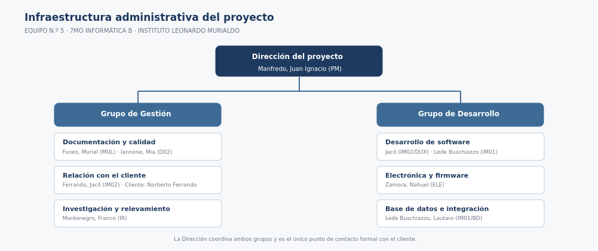
La coordinación operativa interna del equipo técnico del Instituto Leonardo Murialdo se asienta en dos herramientas base de uso gratuito:
- GitHub: Repositorio centralizado para el control de versiones del firmware C++, el backend, la web y la documentación, donde cada miembro debe estar registrado como colaborador activo e incluir la descripción técnica estructurada en el archivos informativos.
- Plantilla Obligatoria de Minutas: Documentación formal de cada avance del período, la cual debe registrar indexada de manera estricta los siguientes campos en cada reunión: Fecha y duración, Participantes, Objetivo de la reunión, Temas tratados, Decisiones y acuerdos alcanzados, y Próximos pasos asignados con responsables técnicos. Se exige registrar cronológicamente cada ajuste aplicado sobre la lógica de captura de señales o el diseño del gabinete tras las validaciones en fábrica con los operarios, garantizando la trazabilidad de la iteración técnica sobre el retrofit industrial.
7Oferta Económica
7.1. Proveedores de Internet
El sistema depende de la conexión a Internet de la fábrica para que el nodo de control se comunique con el backend. Actualmente la fábrica cuenta con un servicio de Telecentro de gama básica, suficiente en ancho de banda para el tráfico del proyecto -el ESP32 consulta el estado cada 2,5 segundos, con paquetes de pocos cientos de bytes- pero sin garantía de disponibilidad ni servicio técnico prioritario. Se evaluaron tres alternativas para el enlace definitivo. La primera es mantener el servicio actual, sin costo adicional, aceptando que ante un corte el telar sigue operable a mano desde su botonera, ya que el sistema está diseñado como fail-safe: si no hay red, el nodo no acciona nada. La segunda es contratar un plan empresarial con IP fija y acuerdo de nivel de servicio, lo que agrega costo mensual pero reduce el tiempo de reposición ante una falla. La tercera es sumar un enlace de respaldo por red móvil (un módem 4G con SIM de datos), que entra automáticamente si cae el enlace principal. Para la etapa actual del proyecto se resolvió continuar con el servicio existente, por dos razones: el sistema no es crítico para la seguridad -su caída no detiene la producción, solo obliga a operar el telar de forma manual- y el costo de un enlace redundante no se justifica mientras haya un solo telar automatizado. La incorporación de un respaldo por red móvil queda registrada como lineamiento futuro, a evaluar cuando se sumen más máquinas al sistema.
7.2. Proveedores de insumos electrónicos / computadoras
- Fabricación de placas de circuito impreso: para el nodo piloto del Nivel 1, la Lista de Componentes prevé el armado del circuito sobre placa universal perforada, con los componentes soldados y fijados al gabinete mediante separadores. El armado sobre protoboard se utiliza únicamente durante las pruebas de banco: la entrega final se realiza sobre placa soldada, según lo establecido en los Lineamientos del proyecto. La migración a un PCB diseñado y fabricado a medida queda registrada como lineamiento futuro, para el caso de una eventual producción en serie.
- Distribución de Componentes Integrados: Firmas globales y componentes listados en la BOM: Espressif Systems (módulo MCU), Hi-Link (módulo de fuente) y Sharp/Lite-On (optoacopladores) e IXYS/Littelfuse (relés OptoMOS LCA110).
Suministros locales de ferretería industrial para la adquisición de resina epóxica de encapsulado para potting, aerosoles de barniz de tropicalizado dieléctrico (Conformal Coating), mangueras prensacables plásticos estancos de rosca tipo glándula PG, y rollos de cable multifilar de cobre de 1 mm², 6 hilos internos, para las líneas de control:
| CATEGORÍA | COMPONENTE/INSUMO | MARCA/MODELO COMERCIAL | ESPECIFICACIÓN TÉCNICA |
|---|---|---|---|
| Protección PCB | Barniz Dieléctrico | Loxeal/Chemtronics PLACER 30-21 | Recubrimiento conformador (Conformal Coating) aislante de humedad y pelusa. |
| Conectividad | Borneras de Conexión | Phoenix Contact/Wago Serie 236 | Borneras de resorte para riel DIN y PCB, resistentes a vibraciones mecánicas. |
| Gabinete y Red | Prensacables Industriales | Steck/BAW Norma PG (PG9/PG11) | Grado IP65 en Poliamida 6.6 con junta de estanqueidad. |
| Aislamiento | Optoacopladores | Sharp/Lite-On PC817 | Aislamiento galvánico óptico de 5000 V RMS entre 24V y 3.3V. |
| Procesamiento | Microcontrolador | Espressif ESP32-WROOM-32 | Dual-core 240 MHz, conectividad Wi-Fi/BLE, memoria Flash SPI de 4MB. |
Tabla 14. Especificaciones técnicas de los componentes principales.
8Estimación Económica
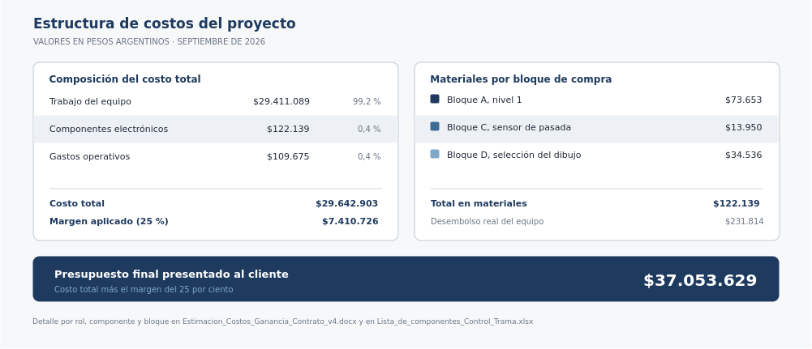
El presupuesto se organiza en cuatro bloques de compra y confirma que toda la arquitectura de software seleccionada es de uso libre, con costo de licenciamiento mensual de $0. Los valores corresponden a la revisión del 28/08/2026 y se mantienen actualizados en la planilla del equipo (Lista_de_componentes_Control_Trama.xlsx y Estimacion_Costos_Ganancia_Contrato_v4.docx).
Los componentes efectivamente adquiridos para el Bloque A suman $73.653, a los que se agregan $13.950 del Bloque C y $34.536 del Bloque D, totalizando $122.139 en materiales. Sumando los gastos operativos de $109.675 y el valor del trabajo del equipo, valuado en $29.411.089 según las tarifas del proyecto, el costo total asciende a $29.642.903. Aplicando el margen del 25 % previsto, el presupuesto final es de $37.053.629, con una ganancia proyectada de $7.410.726.
| BLOQUE DE COMPRA | CONTENIDO | CUÁNDO COMPRARLO | ¿GRATIS/PRESTADO? | SUBTOTAL |
|---|---|---|---|---|
| Bloque A, Nivel 1 (control y sensado) | ESP32, dos módulos de relé (uno de 2 canales y uno individual, 3 salidas en total), fuente HLK-5M05 220V→5V, fusible lento 1A, 3 optoacopladores PC817 con sus puentes rectificadores y resistencias limitadoras, 6 resistencias de polarización, capacitores de desacople, gabinete IP65, prensacables, borneras, cable multifilar de 6 conductores y 1 mm² y placa universal. | Etapa 4 | No | $73.653 |
| Bloque C, Sensor de pasada | Sensor inductivo LJ12A3-4-Z/BX (ya adquirido), optoacoplador y resistencias de adaptación de nivel, más el soporte de montaje a fabricar. | Incluido en esta etapa | No | $13.950 |
| Bloque D, Nivel 2 (selección del dibujo) | Intervención de las 4 bobinas de selección ya instaladas en el telar, que trabajan con 24 V en alterna: relés OptoMOS LCA110 (uno por lector óptico, más repuestos) con sus zócalos y sus resistencias (330 Ω y 10 kΩ del lado del ESP32; de protección y 10 kΩ ½ W del lado del telar). Las bobinas se siguen alimentando desde el propio telar. | Recién después de medir (tarea 5.10) | No | $34.536 (a completar tras medir la salida del lector óptico) |
| TOTAL DEL PROYECTO | Bloques A, C y D. | - | - | $122.139 |
Tabla 15. Bloques de compra: contenido, oportunidad y subtotal.
La estructura de costos muestra que el 99,2 % corresponde al trabajo del equipo y solo el 0,8 % ($231.814, materiales y gastos operativos) a dinero efectivamente desembolsado. Orden de compra recomendado: (1) Bloque A, ya adquirido casi en su totalidad, para completar la Etapa 4; (2) la medición del telar, incluyendo las bobinas de selección instaladas; y (3) recién entonces los Bloques C y D, cuyos componentes dependen de esa medición. La planilla completa, con el detalle por ítem y los precios de referencia, se mantiene en el archivo Lista_de_componentes_Control_Trama.xlsx de la carpeta compartida del equipo.
- Costos de operación mensuales recurrentes: $0. El plan gratuito de Neon cubre las necesidades de un piloto de un solo telar sin costo de licenciamiento, y el despliegue del backend se realiza también sobre un plan sin cargo. A esto se suma el servicio de mantenimiento posterior a la garantía, detallado en la Estimación de Costos, que prevé un abono mensual de $129.625 y visitas de mantenimiento preventivo de $240.188 cada una.
9Lineamientos Futuros
Una vez validado el piloto de un telar (Nivel 1 y Nivel 2), el sistema queda en condiciones de crecer en dos direcciones: hacia más máquinas dentro de la misma fábrica, y hacía más funciones de valor para la gestión del negocio. El esquema de base de datos ya está preparado para esto (la tabla telares admite múltiples registros desde el día uno), por lo que estas líneas no requieren rediseñar la arquitectura, sino extenderla.
9.1. Escalamiento a Toda la Flota de Telares
- Réplica del nodo por máquina: instalar un ESP32 por telar (mismo diseño del Bloque A/D) y darlo de alta como una nueva fila en la tabla telares, sin tocar el backend ni la base de datos.
- Vista de fábrica consolidada: un panel único que muestre el estado de los once telares de la fábrica en simultáneo (tejiendo, pausada, en error), para que el dueño no tenga que recorrer la fábrica para saber qué telar necesita atención.
9.2. Analítica y Mantenimiento Predictivo
- Reportes de producción: usar el historial_produccion ya registrado (pasadas, tiempos, paradas) para generar reportes semanales o mensuales de rendimiento por telar y por operario, con exportación a PDF o Excel.
- Alertas de mantenimiento: cruzar la frecuencia de errores_log por telar con las horas de uso para sugerir mantenimientos preventivos antes de que ocurra una falla mayor, aprovechando datos que el sistema ya está guardando.
9.3. Nivel 3: Selección Jacquard Digital
Evolución de largo plazo, condicionada al éxito y la amortización del Nivel 2: reemplazar la cinta de papel perforada por un sistema de selección electrónico de marcos, eliminando por completo la dependencia de un insumo físico consumible. Es una inversión mayor que excede el alcance de este proyecto académico, pero la arquitectura de datos (matriz_pasadas por dibujo) ya es compatible con ese modelo de control, así que no implica descartar nada de lo construido.
9.4. Oportunidades de Negocio
- Soporte y mantenimiento del sistema: una vez estabilizado el piloto, ofrecer un abono mensual de soporte técnico y actualizaciones al cliente, en línea con el modelo de costo $0 de licenciamiento ya adoptado (Neon, Node.js, PostgreSQL).
- Réplica en otras fábricas textiles: el desarrollo no depende de las particularidades de un telar en especial más que en el conexionado eléctrico de Marcha/Pausa, por lo que el mismo producto podría ofrecerse a otras fábricas con telares planos mecánicos similares, adaptando únicamente el Bloque A/D a cada máquina.
9.5. Automatización del Conteo de Producción y Parada por Pieza
- Parada automática al completar la pieza: el telar cuenta hoy las vueltas con un contador mecánico y el operario debe estar atento para detener la máquina al llegar al número que corresponde a una pieza terminada. Con el sensor de pasada del Bloque C y el relé de Pausa ya instalados, el sistema puede llevar ese conteo de forma digital y accionar la parada por sí mismo al alcanzar el objetivo cargado desde la web. No requiere hardware adicional: es una condición en el firmware y un campo en la base de datos.
- Acumulación entre turnos: el conteo se guarda en el historial de producción, de modo que una pieza que abarca varios turnos no depende de que alguien recuerde en qué número quedó el contador mecánico.
- Estadísticas de máquina: a partir de los registros de inicio, fin y pasadas que el sistema ya guarda, se pueden derivar horas efectivas de funcionamiento, metros producidos por período y comparación entre telares, sin agregar ningún sensor.
9.6. Gestión de Insumos y Trazabilidad de Piezas
- Control de trama y urdimbre restantes: conociendo los metros consumidos por pasada, el sistema puede estimar cuánto queda de cada insumo y avisar antes de que se termine. Hoy eso se estima a ojo, y hay rangos en los que el operario no llega a percibir cuánto resta.
- Encadenado de trabajos: permitir que la web indique qué dibujo sigue una vez terminada la pieza en curso, de modo que el operario no dependa de una consulta telefónica para saber cómo continuar.
- Acceso remoto: la arquitectura ya contempla el ingreso con usuario, lo que habilita a futuro que el dueño consulte el estado de la fábrica sin estar presente. Esta línea cobra sentido recién cuando el sistema esté validado en producción. El acceso multiusuario, en cambio, ya está resuelto: cada persona registra su propia huella dactilar, y desde el cuarto usuario el registro requiere un código de invitación que genera cualquier usuario ya registrado.
9.7. Estadísticas de Producción por Dibujo y Ficha Técnica Descargable
- Historial por dibujo: implementado. El registro de producción guarda, para cada trabajo, qué dibujo se usó, cuándo empezó, cuándo terminó y cuántas pasadas acumuló, y con eso la biblioteca muestra por cada dibujo cuántas veces se tejió, las pasadas acumuladas, el tiempo total de máquina y la última vez que se utilizó.
- Metros producidos: implementado. Convertir las pasadas en metros requiere conocer cuánto avanza la tela en cada pasada, un valor que depende de la densidad del tejido y que el operario carga una sola vez por dibujo, tras medir un tramo conocido sobre la máquina. Hasta que se mida en cada dibujo, las pasadas y los metros figuran como estimados.
- Ficha técnica descargable: implementado. Reúne en un PDF los datos del dibujo (nombre, dimensiones, matriz, repeticiones de cada fila y colores), la producción (metros tejidos, pasadas, metros que faltan y horas de máquina) y el hilado (peso, metros que alcanza a tejer, usado y restante) y una vista previa de la tela a escala con el telar dibujado arriba (con las bobinas de trama y sus alimentadores en sus colores), una llave por vuelta y, si están los metros por pasada, una regla en centímetros; se descarga desde el editor. El hilado se carga en la ficha del dibujo (ícono de engranaje).
- Condición previa: mientras el sensor de pasada del Bloque C no esté instalado y validado, el conteo es una estimación por tiempo y no una lectura de la máquina. Por eso la biblioteca y la ficha técnica marcan las pasadas y los metros como estimados (≈) en vez de mostrarlos con precisión aparente, hasta que el conteo real esté confirmado, tal como se indica en la sección 9.5.
10Contrato
10.1. Objetivo del proyecto
Establecer los términos de mutuo acuerdo para el diseño, fabricación e instalación de un sistema IoT de control electrónico y retrofit activo en tiempo real sobre la infraestructura de telares planos mecánicos del cliente, con la finalidad de dotar a la fábrica de trazabilidad de turno y habilitar mantenimiento predictivo.
10.2. Alcance del proyecto
- El Desarrollador se compromete a hacer entrega de: un nodo electrónico ESP32 con la etapa de potencia y protecciones montadas y soldadas sobre placa universal perforada, fijada al gabinete con separadores (no se entrega sobre protoboard) con borneras, el firmware C++ cargado y testeado en el microcontrolador, la base de datos PostgreSQL (Neon) enlazada en tiempo real, el backend Node.js/Express y la interfaz web (con login biométrico WebAuthn) operativos durante una fase piloto. Quedan explícitamente fuera del acuerdo modificaciones a la estructura de engranajes, reparación de motores, provisión de repuestos mecánicos o la alteración del Jacquard de tarjetas perforadas.
10.3. Plazos
El tiempo de ejecución para el Nivel 1 (MVP de arranque y pausa remotos, ya validado con relés en el telar real) corresponde a la Etapa 04 del Gantt, del 06/07/2026 al 16/09/2026. El despliegue del Nivel 2 (control de las bobinas de selección) corresponde a la Etapa 05, del 17/07/2026 al 15/10/2026. Las dos etapas se solapan a propósito y no son secuenciales: mientras el Nivel 1 se instala y se valida en la máquina, el Nivel 2 avanza en diseño, mediciones y desarrollo de firmware, actividades que no requieren detener el telar. La instalación efectiva del Nivel 2 solo comienza una vez cerrada la Etapa 04, con la medición del telar como primer paso obligatorio antes de comprar los relés LCA110 del Nivel 2. Fechas de hitos específicos según el diagrama de burndown: Gantt_2026 - Automatización de Telar Industrial.xlsx (inicio de proyecto 16/03/2026, cierre previsto 14/11/2026).
10.4. Responsabilidades
- Del Equipo de Desarrollo: Asume la responsabilidad integral del proyecto: la planificación y el cumplimiento del cronograma, la calidad del software (frontend, backend y base de datos), la correcta integración del hardware con el telar, y la documentación del avance en la Bitácora de Proyecto. El equipo distribuye estas responsabilidades entre sus roles (Sección 2.3), pero responde de forma conjunta ante la cátedra y el cliente por el resultado final, no solo por el diseño electrónico de un componente en particular.
- Del Cliente: Se compromete a garantizar el acceso físico seguro del equipo a las instalaciones de la fábrica, facilitar los datos pendientes de la tarjeta de perfil operativo, coordinar las ventanas de tiempo con mantenimiento para la conexión del nodo al tablero eléctrico del telar sin penalizar los objetivos de producción diaria y proveer las acometidas eléctricas necesarias.
10.5. Criterios de aceptación
El cliente dará por aceptado y completado el desarrollo si el nodo IoT demuestra operar de forma continua durante la prueba de 48 horas en la fábrica, logrando clasificar e informar una parada no planificada de la máquina en un tiempo menor a 30 segundos en la página web.
10.6. Condiciones de modificación
Cualquier solicitud de cambio sobre las funciones acordadas en los requisitos del MVP deberá ser asentada formalmente en la bitácora de documentación y requerirá una evaluación de viabilidad económica previa por parte de la cátedra antes de ser implementada.
10.7. Garantía
- Vigencia: de uno a tres meses desde la fecha de entrega y aceptación del sistema, contados a partir de la aprobación del criterio establecido en la sección 10.5. El plazo exacto dentro de ese rango se define junto con la cátedra al momento de la entrega final.
- Alcance: cubre el nodo de control con su etapa de potencia y sus protecciones, el firmware cargado en el microcontrolador, y la integración con la base de datos y la interfaz web, tal como se entregan al aprobar el criterio de aceptación.
- Exclusiones: quedan fuera de la garantía el mal uso del sistema, las modificaciones no autorizadas, cualquier intervención sobre la estructura mecánica del telar y las fallas de fábrica en componentes de terceros, que en su caso quedan cubiertas por la garantía del fabricante o del vendedor original.
- Soporte durante la vigencia: corrección sin costo adicional de los errores de software o firmware que se detecten dentro del plazo. Vencida la garantía, el soporte continúa bajo el esquema de abono mensual descrito en la sección 9.4.
10.8. Partes involucradas
- Cliente: Norberto Ferrando, propietario de la fábrica textil situada en Billinghurst, provincia de Buenos Aires, en su carácter de comitente y titular del telar Vamatex C 201 sobre el que se ejecuta el proyecto.
- Equipo desarrollador: Equipo N.º 5 de 7mo año Informática B del Instituto Leonardo Murialdo, integrado por Manfredo Juan Ignacio en la dirección del proyecto y el desarrollo de backend, Lede Buschiazzo Lautaro en infraestructura del microcontrolador y base de datos, Ferrando Jaco en infraestructura del microcontrolador y diseño de interfaz, Iannone Mia en desarrollo de front end y Montenegro Franco en infraestructura de red.
- Equipo de partners: Zamora Nahuel, de 7mo Electrónica, en el asesoramiento sobre la etapa de potencia y el conexionado; y Funes Muriel, de 7mo Multimedios, en la documentación audiovisual del proyecto.
- Supervisión académica: Prof. Pedaci Lourdes, a cargo de la cátedra de Evaluación de Proyectos del Instituto Leonardo Murialdo.
10.9. Firmas
El presente contrato se suscribe en dos ejemplares de un mismo tenor y a un solo efecto, quedando uno en poder del cliente y otro en poder del equipo desarrollador. Las partes declaran haber leído el documento en su totalidad y aceptar las condiciones establecidas en las secciones precedentes.
- Por el cliente: Norberto Ferrando. Aclaración, firma y fecha.
- Por el equipo desarrollador: Manfredo Juan Ignacio, en representación del Equipo N.º 5. Aclaración, firma y fecha.
- En conformidad con la supervisión académica: Prof. Pedaci Lourdes. Aclaración, firma y fecha.
El equipo
Los perfiles profesionales de quienes desarrollaron el proyecto.
Supervisión académica: Prof. Pedaci, Lourdes. Cátedra de Evaluación de Proyectos, Instituto Leonardo Murialdo.
Evaluación de Proyectos · 7mo Informática 2026 · Instituto Leonardo Murialdo.
Prof. Pedaci, Lourdes